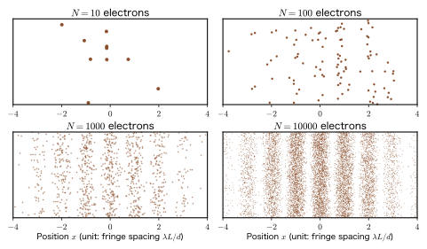
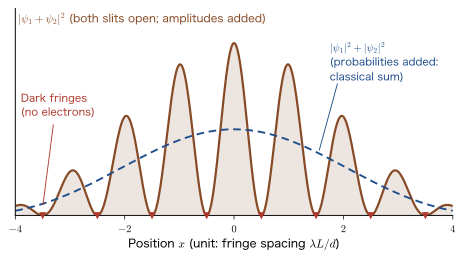
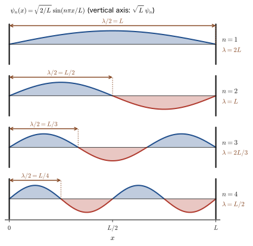
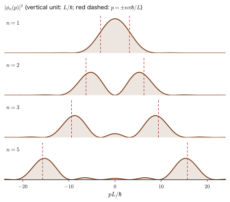
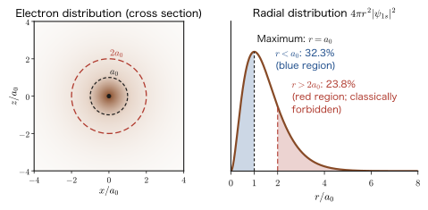
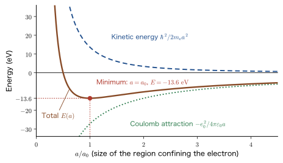

Chapter 2Naive Questions about Quantum Mechanics — Wavelength, Probability, Particles and Waves, and Temperature
When we begin to study quantum mechanics, many people stop at the same place. We are told that “the electron is both a particle and a wave,” but then what is it that is waving? We are told that “the length of the wave (the wavelength) is given by $\lambda=h/p$,” but of what, exactly, is this $\lambda$ the wavelength? If the square of the absolute value of the wave function is “the probability of finding the particle,” then, since there is a probability for position, shouldn't there be a probability for momentum as well? And in the first place, what does it mean to “have a wave nature”? Finally, if we lower the temperature to absolute zero, will the electron come to a stop, too? Such naive questions are not only for beginners. Even for people who have used quantum mechanics for a long time, they are essential questions that are worth stopping to reconsider from time to time.
In this chapter, before entering the Schrödinger equation and the theory of operators, we take up these four questions head-on. Our approach has two parts. First, we use as few formulas as possible. When we do use a formula, we always add in words what that formula says; the details of the calculations (how to solve the differential equation, how to carry out the integral) are left to later chapters, and we attach links to them. The calculations that are truly necessary are collected in the “Derivation” and “Math Tool” boxes, so on a first reading you may skip them and follow only the results and the figures. Second, every question is considered in the order “experimental fact → figure → way of thinking → formula → example.” Rather than starting abruptly from the axioms, we first check what can actually be seen in experiments, and then show, with concrete numbers for electrons, atoms, and molecules, where the intuition of classical physics (AD 03, “Introductory University Physics”) breaks down.
The four questions we take up are as follows. (1) What is the $\lambda$ in the de Broglie relation the wavelength of? (Section 2.2.) (2) If position has a probability density, doesn't momentum have a probability density, too? (Section 2.3.) (3) What is meant by “particle nature and wave nature”? (Section 2.4.) (4) Does the wave function depend on temperature, and why must the electron be “spread out”? (Section 2.5.) First, however, in Section 2.1 we look at the experiment that is the foundation of all of these—the experiment in which electrons are sent through a double slit one at a time. For each of the four questions, this chapter only points out the “direction” of the answer; solving them completely as equations is done from Part II onward. Which question is resolved in which chapter is summarized in the map in Section 2.6.
- Be able to explain that when electrons are sent through a double slit one at a time, each one is detected as a “point,” yet when many are accumulated, bright and dark fringes (interference fringes) form, and be able to calculate the fringe spacing $\lambda L/d$
- Be able to explain that the $\lambda$ in the de Broglie relation $p=h/\lambda$ is “the wavelength of a plane wave of momentum $p$,” that the standing wave of a particle in a box is a superposition of $+p$ and $-p$, and that in the ground state of the harmonic oscillator neither the position nor the momentum is fixed at a single value
- Understand that the momentum probability density $\abs{\phi(p)}^2$ is obtained from the Fourier transform of the wave function, and that the spread in position and the spread in momentum are inversely proportional (for a Gaussian wave packet, $\Delta x\,\Delta p=\hbar/2$)
- Examine “having a wave nature” by dividing it into four readings (matter wave, spread, passing through, and interference), and acquire the view that “detection is particle-like, propagation is wave-like”
- Distinguish between the unattainability of absolute zero (the third law of thermodynamics) and the fact that electrons and atomic nuclei do not come to rest even as $T\to0$ (zero-point vibration and Fermi motion), and be able to explain that what temperature changes is not the wave function but the occupation probabilities
- Confirm, through an estimate of the size of an atom ($a=a_0$, $E=-13.6\ \mathrm{eV}$), that the “spreading” of the electron determines the size and stability of the atom
Source notes: Yasuhide Mochizuki, Physics Notes: Quantum Mechanics 1, pp. 1–2.
2.1 The Double-Slit Experiment with Electrons Sent One at a Time
Before turning to the four questions, let us look carefully at one experiment that formed the basis of the claim that “the electron is also a wave.” Every question in this chapter is, in the end, another face of the mystery that this experiment presents. The experiment itself is simple: electrons are fired one at a time toward a plate with two slits (narrow gaps), and we record where they arrive on a detection plane placed beyond it.
2.1.1 The double slit with light — a review
First, let us recall the case of light. Around 1801, Young showed that when light is passed through two closely spaced slits, bright and dark fringes appear on a screen beyond them, and he took this as decisive evidence that light is a wave (AD 03, Chapter 16, Section 16.2). Let the spacing of the two slits be $d$, the distance from the slits to the screen $L$ ($L\gg d$), and the wavelength of the light $\lambda$. The light that reaches a point $x$ on the screen (with the origin at the center) from the two slits differs in path length by about $dx/L$. If this path difference is an integer multiple of the wavelength, crests meet crests and troughs meet troughs, so the waves reinforce each other (a bright line); if it is a half-integer multiple of the wavelength, crests meet troughs and the waves cancel each other (a dark line). In this way, the spacing between adjacent bright lines is
The shorter the wavelength $\lambda$, the finer the fringes. On the other hand, if bullets (particles) are fired at the two slits, only two bands, each centered directly behind a slit, form on the wall beyond the slits, and no fringes appear. Therefore, “whether or not fringes form” is the criterion that distinguishes a wave from a particle.
2.1.2 Trying it with electrons — the history of the experiments
In 1924, de Broglie predicted that a material particle such as an electron is also accompanied by a wave of wavelength $\lambda=h/p$, inversely proportional to the momentum $p$ ($h$ is Planck's constant, $6.626\times10^{-34}\ \mathrm{J\,s}$; it is treated in detail in Chapter 6). If this is correct, electrons should also exhibit diffraction and interference. However, the wavelength of an electron is extremely short. Even for electrons accelerated through an accelerating voltage of $50\ \mathrm{kV}$, $\lambda\approx5.4\ \mathrm{pm}$ ($1\ \mathrm{pm}=10^{-12}\ \mathrm{m}$), which is only about one-twentieth to one-fiftieth of the diameter of an atom (about $0.1$–$0.3\ \mathrm{nm}$). Because the wavelength is short, the fringe spacing in Eq. \eqref{eq:2-fringe} is also small, and the experiment required advances in technology. Table 2.1 lists the main experiments in chronological order.
| Year | Experimenters | Object | Description |
|---|---|---|---|
| 1927 | Davisson and Germer | Electrons | When electrons are reflected from the surface of a single crystal of Ni, they are scattered strongly at particular angles. Electron diffraction by a crystal (Section 2.4.5) |
| 1927 | G. P. Thomson | Electrons | Electrons that pass through a thin metal film form a concentric diffraction pattern (in Japan, Seishi Kikuchi observed electron diffraction with a thin flake of mica in 1928) |
| 1955 | Möllenstedt and Düker | Electrons | Observation of electron interference fringes with an electron biprism (described below). An electron-optical element that works in the same way as a double slit (Naturwissenschaften 42, 41) |
| 1961 | Jönsson | Electrons | Interference fringes observed by passing an electron beam through artificially fabricated fine slits (including a double slit) |
| 1988 | Zeilinger et al. | Neutrons | Diffraction and interference of cold neutrons by a single slit and a double slit (Rev. Mod. Phys. 60, 1067) |
| 1989 | Akira Tonomura et al. (Hitachi, Ltd.) | Electrons | Observation of interference fringes building up while the electrons were detected one at a time (Am. J. Phys. 57, 117) |
| 1999 | Arndt et al. | C60 molecules | Interference of a molecule consisting of 60 carbon atoms (Nature 401, 680) |
The electron biprism in the table is a device consisting of an extremely thin metal wire stretched in the center and flat grounded electrodes on both sides of it. When a positive voltage is applied to the wire, the streams of electrons passing to the left and right of the wire are bent inward toward each other and overlap beyond it. Because it works in the same way as the double slit of optics, it is often used in electron interference experiments.
2.1.3 Electrons one at a time — dots become fringes
The setup of the experiment is shown in Figure 2.1. What matters here is that the beam is made extremely weak and the electrons are sent one at a time. If the beam is so weak that there are never two or more electrons inside the apparatus at the same time, the excuse that the electrons influenced one another and thereby produced the fringes is no longer available (in Example 2.2, we estimate the beam intensity that is needed). On the detection plane, the electrons are recorded one at a time, each as a single point.
The result is shown in Figure 2.2 (this is not an actual experimental result but a figure that reproduces the same situation from a probability distribution using random numbers).

This experimental result contains the following four important facts.
- An electron always arrives at a single point. It is never detected spread out thinly, nor split in half and detected at two places. On the detection plane, the electron behaves as a particle with mass and charge.
- The arrival point of a single electron cannot be predicted. At first, the points appear to be scattered randomly. Even when electrons are fired under the same conditions, each one arrives at a different place every time.
- Fringes appear when many points are collected. When thousands to tens of thousands of points have accumulated, the bright and dark fringes become clear. Since the electrons are sent one at a time, it is not that “the electrons interfered with one another.” It can only be that a single electron interferes with itself.
- The fringe spacing is determined by Eq. \eqref{eq:2-fringe}. Moreover, the wavelength $\lambda$ that appears there agrees with the value determined by the de Broglie relation $\lambda=h/p$. The electron really does have a wavelength, and that wavelength is determined by the electron's momentum.
Question: Which slit did the electron pass through?
If the electron is a “particle,” it should pass through only one of the two slits. An electron that passed through the left slit should arrive near the left band, and one that passed through the right slit near the right band, so no fringes should form. In reality, however, fringes do form. If one slit is closed, the fringes disappear (and what is more, electrons come to arrive even at places that were dark lines: Example 2.3). In other words, the fact that “the other path” is open affects where the electron ends up. The electron is, in some sense, following “both” of the two paths available to it. It is quantum mechanics that states this “in some sense” precisely, and below, as a first step, we introduce the idea of “adding not probabilities but probability amplitudes.”
Example 2.1: Fringe spacing in the electron double-slit experiment
Electrons accelerated through an accelerating voltage of $50\ \mathrm{kV}$ are passed through a double slit of spacing $d=1\ \mathrm{\mu m}$ and observed on a detection plane a distance $L=1.5\ \mathrm{m}$ away. (1) Find the wavelength $\lambda$ and the speed $v$ of the electrons. (2) Find the fringe spacing. (3) If green light of wavelength $532\ \mathrm{nm}$ were used in the same arrangement, what would the fringe spacing be?
Solution. (1) The kinetic energy of the electron is $K=e_0V=50\ \mathrm{keV}$. The rest energy of the electron is $m_{\mathrm e}c^2=511.0\ \mathrm{keV}$, and $K$ is as much as about one-tenth of it, so we treat the problem relativistically (Part XI). In relativity, rearranging the relation $(K+m_{\mathrm e}c^2)^2=(pc)^2+(m_{\mathrm e}c^2)^2$ between the total energy $K+m_{\mathrm e}c^2$ and the momentum $p$ gives $(pc)^2=K(K+2m_{\mathrm e}c^2)$ (Part XI). If $K\ll m_{\mathrm e}c^2$, then $pc\approx\sqrt{2m_{\mathrm e}c^2K}$, which agrees with the ordinary $p=\sqrt{2m_{\mathrm e}K}$. Inserting the numbers, we obtain $$ (pc)^2=50\times(50+2\times511.0)\ \mathrm{keV}^2=50\times1072.0\ \mathrm{keV}^2=53\,600\ \mathrm{keV}^2\quad\Rightarrow\quad pc=231.5\ \mathrm{keV} $$ The wavelength is $\lambda=h/p=hc/(pc)$, and with $hc=1239.84\ \mathrm{eV\,nm}$ we have $$ \lambda=\frac{1239.84\ \mathrm{eV\,nm}}{231.5\times10^{3}\ \mathrm{eV}}=5.36\times10^{-3}\ \mathrm{nm}=5.36\ \mathrm{pm} $$ The speed follows from the total energy $E=K+m_{\mathrm e}c^2=561.0\ \mathrm{keV}$: $v/c=pc/E=231.5/561.0=0.413$, that is, $v=1.24\times10^{8}\ \mathrm{m/s}$ (about 41% of the speed of light). If relativity is ignored, then from $p=\sqrt{2m_{\mathrm e}e_0V}$ we get $\lambda=h/\sqrt{2m_{\mathrm e}e_0V}$. Inserting the numbers, $h/\sqrt{2m_{\mathrm e}e_0}=1.226\times10^{-9}\ \mathrm{m\,V^{1/2}}$, so we can write $\lambda=1.226\ \mathrm{nm}/\sqrt{V/\mathrm{V}}$ (one substitutes the number obtained by measuring the voltage $V$ in volts). Substituting $V=5\times10^{4}$ gives $5.48\ \mathrm{pm}$, which is about 2% larger.
(2) By Eq. \eqref{eq:2-fringe}, $$ \Delta x=\frac{\lambda L}{d}=\frac{5.36\times10^{-12}\ \mathrm{m}\times1.5\ \mathrm{m}}{1\times10^{-6}\ \mathrm{m}}=8.03\times10^{-6}\ \mathrm{m}=8.03\ \mathrm{\mu m} $$ This is at most one-tenth of the thickness of a human hair (about $0.1\ \mathrm{mm}$); it cannot be seen with the naked eye, but it is fine enough to be observed if magnified with electron-microscope techniques.
(3) For light, the same formula gives $\Delta x=532\times10^{-9}\ \mathrm{m}\times1.5\ \mathrm{m}/(1\times10^{-6}\ \mathrm{m})=0.798\ \mathrm{m}$. The electron fringes are about 100,000 times finer than the light fringes. This is because the ratio of the wavelengths, $532\ \mathrm{nm}/5.36\ \mathrm{pm}\approx9.9\times10^{4}$, is directly the ratio of the fringe spacings. With the same geometric arrangement the fringes of light would be unrealistically large, so in an actual optical experiment one uses narrower slits or moves the screen closer.
Example 2.2: Accumulation of points, the appearance of the fringes, and the meaning of “one at a time”
(1) Suppose that on average $n$ electrons fall in a width (bin) corresponding to one bright line of the fringes. Since the arrival of electrons is an independent probabilistic event, the scatter (standard deviation) of the number falling in a bin is about $\sqrt{n}$. Assuming that the fringes are clearly visible if the relative fluctuation $1/\sqrt{n}$ is $10\ \%$ or less, how many electrons in total are needed to see fringes with $100$ bins? (2) How many seconds (minutes) does it take when the beam intensity is $10^{3}$ electrons per second and when it is $10$ electrons per second? (3) If the electrons of Example 2.1 ($v=1.24\times10^{8}\ \mathrm{m/s}$) are fired at a rate of $10^{3}$ per second, what is the average spacing between electrons, in meters? How many electrons are inside the apparatus, whose length is $1.5\ \mathrm{m}$, at the same time?
Solution. (1) The relative fluctuation $1/\sqrt{n}$ is $1/\sqrt{10}=0.32$ (32%) for $n=10$ and $1/\sqrt{100}=0.10$ (10%) for $n=100$. To bring it to 10% or less we need $n\ge100$, and with 100 bins a total of $100\times100=10^{4}$ electrons is required. This is why, in Figure 2.2, clear fringes are visible in the $N=10^{4}$ panel, whereas for $N=10$ and $100$ the points look random.
(2) At $10^{3}$ per second, it takes $10^{4}/10^{3}=10\ \mathrm{s}$. At $10$ per second, it takes $10^{4}/10=1000\ \mathrm{s}\approx17\ \mathrm{min}$.
(3) The electrons arrive at a rate of $R=10^{3}$ per second, flying at speed $v$. The spacing between two adjacent electrons is the distance $v/R$ traveled during the time interval $1/R$, so it is $$ \frac{v}{R}=\frac{1.24\times10^{8}\ \mathrm{m/s}}{10^{3}\ \mathrm{s^{-1}}}=1.24\times10^{5}\ \mathrm{m}=124\ \mathrm{km} $$ The number of electrons inside the apparatus of length $1.5\ \mathrm{m}$ is $1.5\ \mathrm{m}\div(1.24\times10^{5}\ \mathrm{m})=1.2\times10^{-5}$. That is, the probability that one electron is inside the apparatus is about $10^{-5}$, and the probability that two are inside at the same time is smaller still, only about one hundred-thousandth of that. The possibility of electrons meeting one another inside the apparatus can be ignored, and we conclude that the fringes are formed by “a single electron interfering with itself.”
2.1.4 Adding probability amplitudes
Let us express the experimental facts so far with a minimum of equations. When only one slit (slit 1) is open, we denote the probability density that an electron reaches the position $x$ on the detection plane by $\abs{\psi_1(x)}^2$. Here $\psi_1(x)$ is the “wave” of the electron that passed through slit 1, and in general it takes complex values (it is called both the probability amplitude and the wave function). The probability is obtained as the square of the magnitude (absolute value) of the complex number. Similarly, when only slit 2 is open, it is $\abs{\psi_2(x)}^2$.
What happens when both slits are open? For classical bullets, the probabilities add: $P=\abs{\psi_1}^2+\abs{\psi_2}^2$. For electrons, however, what adds is not the probability but the amplitude:
The last term of Eq. \eqref{eq:2-amp} is the interference term ($\Real$ is the real part, and $\psi_1^{*}$ is the complex conjugate of $\psi_1$). This term can be positive or negative: if $\psi_1$ and $\psi_2$ have the same phase they reinforce each other, and if they have opposite phases they cancel each other. It is the same mathematics as the superposition of waves (AD 03, Chapter 11, Section 11.6). Only when the interference term vanishes (when $\Real(\psi_1^*\psi_2)=0$) do we obtain the sum for classical bullets. Figure 2.3 compares the two.

Example 2.3: Adding probability amplitudes and dark lines
Suppose that at some point on the detection plane the amplitudes from the two slits have the same magnitude $\psi_0$ (a positive real number) and differ in phase by $\delta$, and let $\psi_1=\psi_0$, $\psi_2=\psi_0e^{i\delta}$. (1) Find the probability density $P$ when both slits are open. (2) Find its values for $\delta=0$ and $\delta=\pi$. (3) Show that the average over $\delta$ from $0$ to $2\pi$ equals the classical sum $\abs{\psi_1}^2+\abs{\psi_2}^2$. (4) When one slit is closed, electrons arrive even at the positions of the dark lines. Think about why “the places where electrons arrive increase.”
Solution. (1) From Eq. \eqref{eq:2-amp}, $P=\abs{\psi_0+\psi_0e^{i\delta}}^2=\psi_0^2\,\abs{1+e^{i\delta}}^2$. Using $\abs{z}^2=zz^*$, we have $$ \abs{1+e^{i\delta}}^2=(1+e^{i\delta})(1+e^{-i\delta})=2+e^{i\delta}+e^{-i\delta}=2+2\cos\delta=4\cos^2\frac{\delta}{2} $$ (in the last step, we used the double-angle formula $1+\cos\delta=2\cos^2(\delta/2)$). Therefore $P=4\psi_0^2\cos^2(\delta/2)$.
(2) For $\delta=0$ (in phase), $P=4\psi_0^2$. This is four times the value $\psi_0^2$ with only one slit open, and twice the classical sum $2\psi_0^2$. For $\delta=\pi$ (out of phase), $\cos(\pi/2)=0$ gives $P=0$, and no electrons arrive at all (a dark line).
(3) Since $\cos^2(\delta/2)=(1+\cos\delta)/2$, the average over $0\le\delta\le2\pi$ is $\dfrac{1}{2\pi}\displaystyle\int_0^{2\pi}4\psi_0^2\cdot\frac{1+\cos\delta}{2}\dd\delta=2\psi_0^2\cdot\frac{1}{2\pi}\Bigl[\delta+\sin\delta\Bigr]_0^{2\pi}=2\psi_0^2$. This equals the classical sum $\psi_0^2+\psi_0^2=2\psi_0^2$. Interference does not increase or decrease the number of electrons; it redistributes the same number of electrons between the places where they arrive and the places where they do not.
(4) If one slit (say slit 2) is closed, then $P=\abs{\psi_1}^2=\psi_0^2$, and even at the position of the dark line in (2) ($\delta=\pi$) we have $P=\psi_0^2\ne0$. This is a phenomenon that cannot be explained by particle intuition: “adding one more path creates places that electrons cannot reach.” In terms of the addition of amplitudes, it can be understood simply as the amplitudes from the two paths canceling each other because they are out of phase.
Caution: Examining the path taken makes the fringes vanish
To find out which slit an electron passed through, suppose we place a detector near the slits so that a record “the electron passed through” is left. Then the fringes on the detection plane vanish, and the pattern becomes the blue dashed line (the classical sum) in Figure 2.3. At the moment we put the system in a situation where the path can be recorded, the interference term vanishes. Conversely, as long as no information about the path remains anywhere, both of the “two possible paths” of the electron contribute to the result. This fact is directly tied to the question of what a measurement is, and we treat it in detail in Chapter 7 and Chapter 8. Feynman described the double-slit experiment as an experiment that contains the heart of all the mysteries of quantum mechanics (The Feynman Lectures on Physics, Vol. III, Chapter 1).
Here we make an important remark about waves and particles. The same result is not limited to electrons. For light, too, if a double-slit experiment is performed while detecting photons one at a time, each photon is detected as a point, and when many have accumulated, they form fringes. The same holds for atoms and molecules: for the C60 molecule of Table 2.1 (its mass is that of 60 carbon atoms, $720\ \mathrm{u}$), at a speed of $200\ \mathrm{m/s}$ we have $\lambda=h/(mv)=2.77\ \mathrm{pm}$. Interference fringes are observed even when the wavelength is only 1/250 of the diameter of the molecule (about $0.7\ \mathrm{nm}$). The reason that no interference is seen for the objects we encounter in everyday life (balls and grains of sand) is merely that their wavelengths are too short (Chapter 1).
2.1.5 Connection to materials science
Application: Using diffraction to investigate the structure of materials
The fact that electrons are waves is directly used in materials research. Selected-area electron diffraction in the transmission electron microscope (TEM) directs an electron beam with $\lambda\approx2.5\ \mathrm{pm}$ (at $200\ \mathrm{kV}$) or so onto a thin sample and investigates the lattice-plane spacings and the symmetry of the crystal. The atomic arrangement of a surface is investigated by low-energy electron diffraction (LEED), which uses electrons of several tens to a hundred-odd $\mathrm{eV}$ (wavelengths of about $0.1$–$0.4\ \mathrm{nm}$), and by reflection high-energy electron diffraction (RHEED), in which high-energy electrons strike the surface at a shallow angle. LEED is the modern version of the very Davisson–Germer experiment of Section 2.4.5. Also, since the neutron has a magnetic moment, neutron diffraction reveals the magnetic structure of magnetic materials and the positions of hydrogen atoms, which are hard to see with X-rays (Example 2.12 in Section 2.4; for details, see Chapter 6, Section 6.6). Like X-ray diffraction (AD 03, Chapter 16, Section 16.7), these methods observe the interference of waves scattered by many atoms, and in essence they are the same as the fringes of the double slit.
Related simulator: Particles passing through slits (single slit and double slit). You can send particles of momentum $p=mv$ one at a time and watch the distribution of their arrival points. Change the wavelength, the slit separation, and the slit width, and check the relation in Eq. \eqref{eq:2-fringe}. The intensity distribution of the double slit is derived as a formula in Chapter 7.
2.2 Question 1 — What Is the Wavelength $\lambda$ in the de Broglie Relation?
In the experiment of Section 2.1, we could read off the wavelength $\lambda$ of the electron from the fringe spacing, and its value agreed with the de Broglie relation $\lambda=h/p$. On reflection, however, this is curious. Exactly “what” is this $\lambda$ the wavelength of? (The “Derivation” boxes in this section are for readers who want to follow the equations line by line. Even if you skip them, you can follow the argument from the main text and figures, which state the results.)
2.2.1 The case of photons and the case of particles
For photons, the situation is clear. Light is an electromagnetic wave, and $\lambda$ is the wavelength of the oscillation of the electromagnetic field (the electric and magnetic fields). It can actually be measured with a diffraction grating or a double slit. The energy of a single photon is $E=h\nu=hc/\lambda$, and the magnitude of its momentum is $p=h/\lambda$ (Chapter 4, Chapter 6).
What about the case of a particle with mass, such as an electron? de Broglie thought that the relation $p=h/\lambda$ that holds for photons holds in the same way for particles.
Law 2.1: The de Broglie relation
A particle whose momentum has magnitude $p$ is accompanied by a wave whose wavelength is
\begin{equation} \lambda=\frac{h}{p} \label{eq:2-debroglie} \end{equation}where $h$ is the Planck constant, $h=6.626\times10^{-34}\ \mathrm{J\,s}$ (treated in detail in Chapter 3). If we define the wavenumber $k$ as the advance of the phase per unit length (in units of $\mathrm{rad/m}$) by $k=2\pi/\lambda$ (it can also be read as how many waves fit in a length $2\pi$), the same relation can also be written as $p=\hbar k$. Here $\hbar$ (h-bar) is the constant obtained by dividing $h$ by $2\pi$, $\hbar=h/2\pi=1.054\,57\times10^{-34}\ \mathrm{J\,s}$. The wave corresponding to a particle moving uniformly with momentum $p$ is the plane wave $e^{i(kx-\omega t)}$ ($k=p/\hbar$).
That this relation agrees with experiment was seen in Fact (4) of Section 2.1.3 (the quantitative confirmation by the Davisson–Germer experiment is carried out in Example 2.11 of Section 2.4.5). However, it is actually not so obvious “the wavelength of what” Eq. \eqref{eq:2-debroglie} refers to. The wave of a particle is not a wave in which “some physical quantity oscillates,” like an electromagnetic wave; it is the wave function $\psi$ introduced in Section 2.1.4. Is $\lambda$, then, the wavelength of the wave function? Let us examine this question concretely in the simplest example—the particle in a box.
2.2.2 Checking with a particle in a box
Consider a particle of mass $m$ confined in a one-dimensional box of length $L$ (a region with walls at both ends, from which the particle cannot escape). We take the coordinate $x$ so that the left end of the box is $0$ and the right end is $L$. As we will derive from the Schrödinger equation in Chapter 10, Section 10.1, the wave function of a state of definite energy (a stationary state) is given by
\begin{equation} \psi_n(x)=\sqrt{\frac{2}{L}}\,\sin\frac{n\pi x}{L}\qquad(0\le x\le L,\ \ n=1,2,3,\dots) \label{eq:2-box} \end{equation}where $\psi_n=0$ outside the box. The coefficient $\sqrt{2/L}$ is the normalization constant that makes the probability of finding the particle somewhere in the box equal to 1, and the integer $n$ labels the state (for a particle in a box, we count from $n=1$). Figure 2.4 shows the cases $n=1,\dots,4$.

Let us read off the wavelength of the wave function $\psi_n$ from the graph. Since we need $\psi_n=0$ at the walls, an integer number of half wavelengths must fit in the box. Since $n$ half wavelengths fit exactly in the length $L$, from $n\times\dfrac{\lambda}{2}=L$ we obtain
\begin{equation} \lambda=\frac{2L}{n} \label{eq:2-lambda-box} \end{equation}This is exactly the same as the natural vibrations of a guitar string (AD 03, Chapter 11, Section 11.7).
Next, let us find the momentum of this state. In quantum mechanics, momentum is represented by the operator $\hat{p}=-i\hbar\dfrac{\dd}{\dd x}$ (Chapter 9). A “state of definite momentum $p$” means a function that, when $\hat{p}$ acts on it, returns the original function multiplied by the constant $p$ (an eigenfunction, with $p$ the eigenvalue). For example, for the plane wave $e^{ikx}$, $\hat{p}\,e^{ikx}=-i\hbar\cdot ik\,e^{ikx}=\hbar k\,e^{ikx}$, so it is an eigenfunction with momentum $p=\hbar k$. What happens, then, when $\hat{p}$ acts on $\psi_n$?
Derivation (may be skipped): The momentum of $\psi_n$ (squared)
[i] Apply $\hat{p}$ once. Since the derivative of $\sin$ is $\cos$, we have
$$ \hat{p}\,\psi_n=-i\hbar\,\diff{\psi_n}{x}=-i\hbar\sqrt{\frac{2}{L}}\,\frac{n\pi}{L}\cos\frac{n\pi x}{L} $$This is a $\cos$, not a constant multiple of the original $\sin$. Therefore $\psi_n$ is not an eigenfunction of the momentum operator. ($\psi_n$ is not a “state in which the momentum is fixed at a single value.”)
[ii] Apply $\hat{p}$ twice. So let us apply $\hat{p}$ twice to form $\hat{p}^2=-\hbar^2\dfrac{\dd^2}{\dd x^2}$; since differentiating $\sin$ twice returns $-\left(\dfrac{n\pi}{L}\right)^2\sin$, we obtain
$$ \hat{p}^2\psi_n=-\hbar^2\diff{^2\psi_n}{x^2}=-\hbar^2\left(-\frac{n^2\pi^2}{L^2}\right)\psi_n=\hbar^2\left(\frac{n\pi}{L}\right)^2\psi_n $$Thus, inside the box, we return to a constant multiple of the original function. That is, the value of the square of the momentum inside the box is determined. Letting $\hat{p}^2\psi=p^2\psi$, we have
$$ p^2=\hbar^2\left(\frac{n\pi}{L}\right)^2=\left(\frac{h}{2\pi}\right)^2\frac{n^2\pi^2}{L^2}=\frac{h^2}{4L^2}\,n^2\qquad\therefore\ \ p=\frac{h}{2L}\,n $$(Here $p$ is a measure of the magnitude of the momentum; we consider the sign in the next subsection.)
∎
We compare this result with the wavelength in Eq. \eqref{eq:2-lambda-box}. From $\lambda=2L/n$ we have $h/\lambda=hn/(2L)$, which agrees exactly with $p=hn/(2L)$ found above. That is, the following holds:
\begin{equation} p=\frac{hn}{2L}=\frac{h}{\lambda} \label{eq:2-pbox} \end{equation}Even for a particle in a box, the de Broglie relation $p=h/\lambda$ is satisfied with the wavelength $\lambda$ of the wave function (Eq. \eqref{eq:2-lambda-box}). Furthermore, substituting into $E=p^2/2m$ gives $E_n=h^2n^2/(8mL^2)$, which agrees with the energy derived from the Schrödinger equation in Chapter 10.
Question: Is $\lambda$, then, the wavelength of the wave function?
Looking at Eq. \eqref{eq:2-pbox}, one is tempted to conclude that “the $\lambda$ in the de Broglie relation is the wavelength of the wave that appears in the graph of the wave function.” However, two questions remain here. First, although $\psi_n$ is not an eigenfunction of the momentum, how can we speak of “momentum $p=h/\lambda$”? ($\hat{p}\,\psi_n$ did not turn out to be a constant multiple of $\psi_n$.) Second, for a wave function with no wave at all—for example, the ground state of the harmonic oscillator, which we will see next—can neither $\lambda$ nor $p$ be determined? Let us answer them in turn.
2.2.3 Answer: A standing wave is a superposition of two traveling waves in opposite directions
From Euler's formula, $\sin$ can be written as $\sin kx=\dfrac{e^{ikx}-e^{-ikx}}{2i}$. Letting $k=n\pi/L$, Eq. \eqref{eq:2-box} becomes
\begin{equation} \psi_n(x)=\sqrt{\frac{2}{L}}\,\frac{e^{ikx}-e^{-ikx}}{2i}=\frac{1}{i\sqrt{2L}}\Bigl(e^{ikx}-e^{-ikx}\Bigr),\qquad k=\frac{n\pi}{L} \label{eq:2-two-waves} \end{equation}Here $e^{ikx}$ is a plane wave of momentum $+\hbar k$ (a traveling wave moving to the right), and $e^{-ikx}$ is a plane wave of momentum $-\hbar k$ (a traveling wave moving to the left). Therefore the state $\psi_n$ of a particle in a box is a standing wave that is an equal-magnitude superposition of a “wave traveling to the right with momentum $\hbar k$” and a “wave traveling to the left with momentum $\hbar k$.” This is nothing other than the description, in terms of the wave function, of the fact that a particle repeatedly reflected at the walls is “going to the right and then to the left.” Since the two waves have equal magnitudes, when the momentum is measured, values near $+\hbar k$ and values near $-\hbar k$ appear with equal probability (the larger $n$ is, the more the distribution concentrates near $\pm\hbar k$; the precise behavior will be seen in Figure 2.6 of the next section). For either component, $\lambda=2\pi/k$ and $\hbar k=h/\lambda$.
In what follows, the mean value obtained when the momentum is measured many times in the same state is called the expectation value and is written $\expval{p}=\displaystyle\int\psi^*\,(\hat{p}\psi)\dd x$. $\expval{p^2}$ is the average of $p^2$, and the spread in momentum $\Delta p$ is the square root of the mean of the squared deviation from the mean, $\Delta p=\sqrt{\expval{p^2}-\expval{p}^2}$ (the standard deviation). The spread in position $\Delta x$ is defined in the same way (for details, see Chapter 8).
From this, we learn the following.
- The $\lambda$ in the de Broglie relation is the wavelength of the plane wave with that momentum $p$. The wavelength of a wave function is to be understood in this sense. The wavelength $2L/n$ of $\psi_n$ equals the wavelength of either of the two traveling waves ($\pm p$) that make up $\psi_n$.
- The standing wave $\psi_n$ does not tell whether the momentum is on the $+p$ side or the $-p$ side, but it fixes the measure of its magnitude $\sqrt{\expval{p^2}}=h/\lambda$. Inside the box, $\hat{p}\,\psi_n$ is not a constant multiple of $\psi_n$, but $\hat{p}^2\psi_n=(\hbar k)^2\psi_n$ does hold. This is the mathematical meaning of the derivation above.
- The mean value (expectation value) of the momentum is $\expval{p}=0$, since the rightward and leftward contributions cancel each other (Example 2.5). On the other hand, the square root of the mean value of the square of the momentum is $\sqrt{\expval{p^2}}=n\pi\hbar/L=h/\lambda$, which is $\hbar k$ itself.
Caution: The momentum is not “exactly $\pm\hbar k$”
The explanation so far is fine as a picture but, strictly speaking, a little crude. The right-hand side of Eq. \eqref{eq:2-two-waves} equals $\psi_n$ only inside the box ($0\lt x\lt L$), and outside the box $\psi_n=0$. That is, $\psi_n$ is not two plane waves extending over all of space but a wave cut out only inside the box. When a wave is “cut out,” a small spread arises in the momentum. In fact, as we will see in the next section (Section 2.3), the probability distribution of the momentum is not two sharp lines but has a certain width. For large $n$ the distribution has two peaks near $\pm\hbar k$, and the more waves are included, the sharper the peaks become, so that the picture above becomes accurate (only for $n=1$ is there a single peak, at $p=0$). Also, $\hat{p}^2\psi_n=(\hbar k)^2\psi_n$ holds only inside the box. Even so, the mean value of the square of the momentum, $\expval{p^2}=(n\pi\hbar/L)^2$, holds exactly for every $n$. For this reason, this book refers to it not as “the value of the momentum” but as “the root-mean-square value of the momentum,” $\sqrt{\expval{p^2}}$.
Example 2.4: Wavelength, momentum, and energy of an electron in a box
For an electron confined in a one-dimensional box of length $L=0.5\ \mathrm{nm}$, find the wavelength $\lambda$, the magnitude of the momentum $p$, and the energy $E$ for $n=1,2$.
Solution. $n=1$: By Eq. \eqref{eq:2-lambda-box}, $\lambda=2L/1=2\times0.5\ \mathrm{nm}=1.0\ \mathrm{nm}$. By Eq. \eqref{eq:2-pbox}, we have $$ p=\frac{h}{2L}=\frac{6.626\times10^{-34}\ \mathrm{J\,s}}{2\times0.5\times10^{-9}\ \mathrm{m}}=6.63\times10^{-25}\ \mathrm{kg\,m/s} $$ (note that $\mathrm{J\,s}=\mathrm{kg\,m^2/s}$). From $E_1=p^2/2m_{\mathrm e}$, the energy is $$ E_1=\frac{(6.626\times10^{-25})^2}{2\times9.109\times10^{-31}}\ \mathrm{J}=2.410\times10^{-19}\ \mathrm{J}=\frac{2.410\times10^{-19}}{1.602\times10^{-19}}\ \mathrm{eV}=1.504\ \mathrm{eV} $$ Converting to a speed, $v=p/m_{\mathrm e}=7.27\times10^{5}\ \mathrm{m/s}$ (0.24% of the speed of light), so a nonrelativistic treatment is sufficient.
$n=2$: $\lambda=2L/2=0.5\ \mathrm{nm}$, $p=hn/(2L)=h/L=1.33\times10^{-24}\ \mathrm{kg\,m/s}$ (twice the value for $n=1$), and $E_2=p^2/2m_{\mathrm e}=4E_1=6.02\ \mathrm{eV}$. When the wavelength is halved, the momentum doubles and the energy quadruples. In a box of about $1\ \mathrm{nm}$, the energy spacing is of the order of $\mathrm{eV}$. This is the starting point for understanding why the energies of atoms and molecules take discrete values and why the color of light is determined (Chapter 10, Section 10.8).
Example 2.5: Advanced Topic: The expectation value and the mean value of the square of the momentum
For $\psi_n$ in Eq. \eqref{eq:2-box}, (1) verify that $\hat{p}^2\psi_n=(n\pi\hbar/L)^2\psi_n$ (inside the box). (2) Find the expectation value of the momentum $\expval{p}=\displaystyle\int_0^L\psi_n\,\hat{p}\,\psi_n\dd x$. (3) Find $\expval{p^2}=\displaystyle\int_0^L\psi_n\,\hat{p}^2\psi_n\dd x$ and show that $\sqrt{\expval{p^2}}=h/\lambda$. (Since $\psi_n$ is real, no complex conjugate is needed.)
Solution. (1) This follows from the derivation above: $\hat{p}^2\psi_n=-\hbar^2\psi_n''=\hbar^2(n\pi/L)^2\psi_n$.
(2) Using $\hat{p}\,\psi_n=-i\hbar\sqrt{2/L}\,(n\pi/L)\cos(n\pi x/L)$ and $\sin\theta\cos\theta=\tfrac12\sin2\theta$, we obtain $$ \expval{p}=-i\hbar\frac{2}{L}\frac{n\pi}{L}\int_0^L\sin\frac{n\pi x}{L}\cos\frac{n\pi x}{L}\dd x =-i\hbar\frac{n\pi}{L^2}\int_0^L\sin\frac{2n\pi x}{L}\dd x =-i\hbar\frac{n\pi}{L^2}\left[-\frac{L}{2n\pi}\cos\frac{2n\pi x}{L}\right]_0^L $$ Since $\cos(2n\pi)=\cos0=1$, the bracket is $0$, and therefore $\expval{p}=0$. The rightward and leftward momenta cancel each other.
(3) By (1), $\hat{p}^2\psi_n=(n\pi\hbar/L)^2\psi_n$, so $\expval{p^2}=(n\pi\hbar/L)^2\displaystyle\int_0^L\psi_n^2\dd x=(n\pi\hbar/L)^2$ (by the normalization condition $\int\psi_n^2\dd x=1$). Therefore $\sqrt{\expval{p^2}}=n\pi\hbar/L$. On the other hand, $h/\lambda=hn/(2L)=2\pi\hbar n/(2L)=n\pi\hbar/L$, so $\sqrt{\expval{p^2}}=h/\lambda$ holds.
2.2.4 The ground state of the harmonic oscillator — neither position nor momentum is fixed to a single value
Next, let us look at an example of a wave function with “no waves at all.” The wave function of the lowest-energy state (the ground state) of a particle of mass $m$ attached to a spring of spring constant $m\omega^2$ (a harmonic oscillator; $\omega$ is the angular frequency) is, as we will derive in Chapter 13,
\begin{equation} \psi_0(x)=\left(\frac{m\omega}{\pi\hbar}\right)^{1/4}\exp\left(-\frac{m\omega}{2\hbar}x^2\right) \label{eq:2-ho0} \end{equation}Here the states of the oscillator are counted as $n=0,1,2,\dots$, and $\psi_0$ is the ground state (note that this differs from the numbering for the particle in a box, which starts from $n=1$). This is a bell-shaped curve (a Gaussian function) with a gentle peak at the origin, and it has no oscillations. The position distribution and the momentum distribution of a Gaussian function of this form are shown in Figure 2.5 of the next section (the ground state corresponds to the case $\sigma=\sqrt{\hbar/m\omega}$).
In this state, neither the “position” nor the “momentum” is fixed to a single value. The position has a spread over the width of the peak, and since the wave does not oscillate (a wavelength cannot be defined), the momentum cannot be given a value such as $p=h/\lambda$. Here the following question arises: “Although we specified the state by giving the quantum number $n$ (here $n=0$), why is neither the position nor the momentum determined?” For the particle in a box, fixing $n$ fixed the magnitude $h/\lambda$ of $p$, so one would expect that for the harmonic oscillator, too, fixing $n$ would determine one of the two ($x$ or $p$).
Discussion: What is determined when we specify $n$?
What the quantum number $n$ specifies is the energy $E_n$, not the position or the momentum. The operator representing the total energy is called the Hamiltonian $\hat{H}$ (the sum of the kinetic-energy operator $\hat{p}^2/2m$ and the potential energy: $\hat{H}=\hat{p}^2/2m+V(\hat{x})$), and $E_n$ is its eigenvalue. For the particle in a box, $\hat{H}=\hat{p}^2/2m$ inside the box contains only the square of the momentum, so fixing the energy fixed the square of the momentum (Eq. \eqref{eq:2-pbox}). However, $\hat{H}=\hat{p}^2/2m+\tfrac12m\omega^2\hat{x}^2$ of the harmonic oscillator contains both the momentum and the position. Even when the energy $E_n$ is fixed, the division between the kinetic energy and the potential energy fluctuates, so neither the momentum nor the position takes a single value. Mathematically, $\hat{H}$ does not commute with either $\hat{x}$ or $\hat{p}$. This means that swapping the order of the operations changes the result ($\hat{H}\hat{x}\ne\hat{x}\hat{H}$, $\hat{H}\hat{p}\ne\hat{p}\hat{H}$). Therefore, there is no necessity for an eigenstate of $\hat{H}$ to be an eigenstate of $\hat{x}$ or $\hat{p}$ (Chapter 8).
This is in contrast to classical mechanics. For a classical oscillator, once the energy is fixed, the position and the momentum change with time, tracing an elliptical orbit, and at every instant both the position and the momentum are determined. In quantum mechanics, in a stationary state of definite energy, both the position and the momentum have probability distributions.
Let us find the size of the spread concretely.
Derivation (may be skipped): $\Delta x$ and $\Delta p$ for the ground state of the harmonic oscillator
By Eq. \eqref{eq:2-ho0}, the probability density is $\abs{\psi_0}^2=\sqrt{\dfrac{m\omega}{\pi\hbar}}\,\exp\left(-\dfrac{m\omega}{\hbar}x^2\right)$. This equals the form $\exp(-x^2/2s^2)$ (a Gaussian distribution; $s^2$ is the variance) when we let $s^2=\dfrac{\hbar}{2m\omega}$. Therefore $\expval{x}=0$ and $\expval{x^2}=s^2=\dfrac{\hbar}{2m\omega}$, and the standard deviation of the position (the spread) is
$$ \Delta x=\sqrt{\expval{x^2}-\expval{x}^2}=\sqrt{\frac{\hbar}{2m\omega}} $$Next, the momentum. Differentiating $\psi_0$ once gives $\psi_0'=-\dfrac{m\omega}{\hbar}\,x\,\psi_0$, and differentiating once more (product rule) gives
$$ \psi_0''=-\frac{m\omega}{\hbar}\,\psi_0-\frac{m\omega}{\hbar}\,x\,\psi_0'=\left[-\frac{m\omega}{\hbar}+\left(\frac{m\omega}{\hbar}\right)^2x^2\right]\psi_0 $$Therefore
$$ \expval{p^2}=\int\psi_0\bigl(-\hbar^2\psi_0''\bigr)\dd x=\hbar m\omega-\hbar^2\left(\frac{m\omega}{\hbar}\right)^2\expval{x^2}=\hbar m\omega-\hbar^2\frac{m^2\omega^2}{\hbar^2}\cdot\frac{\hbar}{2m\omega}=\hbar m\omega-\frac{\hbar m\omega}{2}=\frac{m\hbar\omega}{2} $$Here we used the normalization condition $\int\psi_0^2\dd x=1$. Also, since $\psi_0$ is a real even function, $\expval{p}=-i\hbar\displaystyle\int\psi_0\psi_0'\dd x=-\dfrac{i\hbar}{2}\Bigl[\psi_0^2\Bigr]_{-\infty}^{\infty}=0$. Hence $\Delta p=\sqrt{\expval{p^2}}=\sqrt{m\hbar\omega/2}$. The product is
$$ \Delta x\,\Delta p=\sqrt{\frac{\hbar}{2m\omega}}\sqrt{\frac{m\hbar\omega}{2}}=\frac{\hbar}{2} $$This is the value of the product.
∎
In this state, the product of the uncertainties of the position and the momentum takes the smallest value it can have, $\hbar/2$ (the uncertainty principle, which we prove in Chapter 8). Furthermore, the expectation values of the kinetic energy and the potential energy are $\expval{T}=\expval{p^2}/2m=\hbar\omega/4$ and $\expval{V}=\tfrac12m\omega^2\expval{x^2}=\hbar\omega/4$, which are exactly equal: each is half of the total energy $\hbar\omega/2$. For a classical oscillator, the lowest-energy state is the state “at rest at the origin” ($E=0$), but in quantum mechanics, confining the position to $\Delta x$ spreads the momentum to $\Delta p$, and the energy cannot be lowered below $\hbar\omega/2$. This is called the zero-point energy.
Example 2.6: Zero-point vibration of a Cu atom
The frequencies of lattice vibrations of metal crystals are of the order of $\mathrm{THz}$ ($=10^{12}\ \mathrm{Hz}$) (in Cu, up to about $7\ \mathrm{THz}$). For an estimate, regard a single Cu atom of mass $63.55\ \mathrm{u}$ as vibrating harmonically, as a hypothetical oscillator with $\nu=10\ \mathrm{THz}$, slightly higher than in real Cu, and find $\hbar\omega$, the zero-point energy, the spread in position $\Delta x$, and the spread in momentum $\Delta p$ in the ground state. Compare them with the nearest-neighbor interatomic distance of Cu ($256\ \mathrm{pm}$).
Solution. From $\omega=2\pi\nu=6.283\times10^{13}\ \mathrm{s^{-1}}$ and $\hbar=6.582\times10^{-16}\ \mathrm{eV\,s}$, we get $\hbar\omega=6.582\times10^{-16}\times6.283\times10^{13}\ \mathrm{eV}=4.136\times10^{-2}\ \mathrm{eV}=41.36\ \mathrm{meV}$. The zero-point energy is $\hbar\omega/2=20.7\ \mathrm{meV}$. The mass of the atom is $m=63.55\times1.6605\times10^{-27}\ \mathrm{kg}=1.055\times10^{-25}\ \mathrm{kg}$, and $$ \Delta x=\sqrt{\frac{\hbar}{2m\omega}}=\sqrt{\frac{1.0546\times10^{-34}}{2\times1.055\times10^{-25}\times6.283\times10^{13}}}\ \mathrm{m}=\sqrt{7.95\times10^{-24}}\ \mathrm{m}=2.82\times10^{-12}\ \mathrm{m}=2.82\ \mathrm{pm} $$ so this is $1.1\ \%$ of the nearest-neighbor distance $256\ \mathrm{pm}$. The spread in momentum is $\Delta p=\sqrt{m\hbar\omega/2}=1.87\times10^{-23}\ \mathrm{kg\,m/s}$, and the product $\Delta x\,\Delta p=2.82\times10^{-12}\times1.87\times10^{-23}=5.27\times10^{-35}\ \mathrm{J\,s}=\hbar/2$ agrees with the value $\hbar/2=5.27\times10^{-35}\ \mathrm{J\,s}$. For this hypothetical oscillator, a spread of about $3\ \mathrm{pm}$ remains even at temperatures close to absolute zero. In real Cu as well, the spread of the atoms due to the zero-point vibration of the lattice vibrations is of the order of a few $\mathrm{pm}$. This zero-point vibration is the reason why the atomic displacement parameter (ADP) in X-ray diffraction does not become $0$ even at low temperature, and we examine its temperature dependence in Section 2.5.
In which chapter is this question resolved?
The momentum distribution of a particle in a box is treated in Section 2.3 and in Chapter 10, Section 10.6; the eigenfunctions and eigenvalues of the momentum and the theory of measurement, in Chapter 8 and Chapter 9; and the ground state of the harmonic oscillator, in Chapter 13. The origin of the matter wave $\lambda=h/p$ (the argument starting from the momentum of the photon) is in Chapter 6.
Related simulator: Harmonic oscillator (spring and wave function). You can verify that even in the lowest-energy state, the weight on the spring “cannot come to rest.”
2.3 Question 2 — Doesn't Momentum Have a Probability Density, Too?
In Section 2.1 we used the fact that the square of the absolute value of the wave function, $\abs{\psi(x)}^2$, is the probability density of finding the particle near position $x$ (the Born interpretation, Chapter 8). The quantity $\abs{\psi(x)}^2\dd x$ is the probability that the particle is found between $x$ and $x+\dd x$. A natural question then arises.
Question: If position has a probability density, doesn't momentum have one, too?
If the position of a particle is determined only probabilistically, its momentum, too, may be determined only probabilistically (the particle in a box and the harmonic oscillator of Section 2.2). In that case, how do we find the probability density that gives “the probability that the momentum lies between $p$ and $p+\dd p$”?
The answer is “yes,” and the way to find it is the Fourier transform. (The “Derivation” boxes in this section and Example 2.8 are for readers who want to follow the equations. If you skip them, you can still follow the argument through the main text and the figures.)
2.3.1 The probability density of momentum is obtained from the Fourier transform of the wave function
Think of a sound. The sound of a musical instrument can be described as a function of time (a waveform), that is, how the air pressure changes with time, and it can also be described as a spectrum, that is, which pitches (frequency components) it contains and how much of each. These are two ways of looking at the same sound, and the mathematics that takes us from one to the other is the Fourier transform (AD 02, Chapter 30, Section 30.1; AD 03, Chapter 17, Section 17.6).
The same thing happens in quantum mechanics. A particle whose momentum is definitely $p$ is represented by the plane wave $e^{ipx/\hbar}$ (Section 2.2; from Eq. \eqref{eq:2-debroglie} and $k=p/\hbar$). Any wave function $\psi(x)$ can be expressed as a superposition of plane waves of various momenta. If we denote the weight of the superposition by $\phi(p)$, then
\begin{equation} \psi(x)=\frac{1}{\sqrt{2\pi\hbar}}\int_{-\infty}^{\infty}\phi(p)\,e^{ipx/\hbar}\dd p \label{eq:2-psi-inv} \end{equation}holds. The plane wave expresses how much of the component with momentum $p$ the wave function contains. Conversely, the formula that extracts the weight $\phi(p)$ from $\psi(x)$ is
\begin{equation} \phi(p)=\frac{1}{\sqrt{2\pi\hbar}}\int_{-\infty}^{\infty}\psi(x)\,e^{-ipx/\hbar}\dd x \label{eq:2-phi-def} \end{equation}We call $\phi(p)$ the momentum-space wave function; it gives another way of looking at the same state as the position wave function $\psi(x)$.
Definition 2.1: Probability density of momentum
The square of the absolute value of $\phi(p)$ in Eq. \eqref{eq:2-phi-def}, $\abs{\phi(p)}^2$, is called the probability density of momentum. The quantity $\abs{\phi(p)}^2\dd p$ is the probability that the momentum is found between $p$ and $p+\dd p$. If the position wave function is normalized ($\int\abs{\psi(x)}^2\dd x=1$), the probability density of momentum is automatically normalized as well:
\begin{equation} \int_{-\infty}^{\infty}\abs{\phi(p)}^2\dd p=\int_{-\infty}^{\infty}\abs{\psi(x)}^2\dd x=1 \label{eq:2-parseval} \end{equation}(This is one of the equalities of the Fourier transform, Parseval's equality. The coefficient $1/\sqrt{2\pi\hbar}$ is attached symmetrically so that this normalization holds.)
Math Tool: Fourier-transform convention (correspondence with AD 02)
In AD 02, Chapter 30 (Section 30.1), the Fourier transform was defined as $\tilde{f}(k)=\displaystyle\int f(x)\,e^{-ikx}\dd x$ and the inverse transform as $f(x)=\dfrac{1}{2\pi}\displaystyle\int\tilde{f}(k)\,e^{ikx}\dd k$, with the coefficient $1/2\pi$ placed only on the inverse-transform side. In quantum mechanics it is more convenient to connect the momentum $p$ and the wavenumber $k$ by $k=p/\hbar$ and to distribute the coefficient symmetrically. Substituting $k=p/\hbar$, the relation between the two can be written
$$ \phi(p)=\frac{1}{\sqrt{2\pi\hbar}}\,\tilde{\psi}\!\left(\frac{p}{\hbar}\right) $$Indeed, in Eq. \eqref{eq:2-phi-def} we have $\int\psi(x)e^{-i(p/\hbar)x}\dd x=\tilde{\psi}(p/\hbar)$, so the two agree except for the coefficient. The inverse-transform formula \eqref{eq:2-psi-inv} is obtained by substituting $k=p/\hbar$ and $\dd k=\dd p/\hbar$ into the inverse transform of AD 02, which gives $\dfrac{1}{2\pi}\cdot\sqrt{2\pi\hbar}\cdot\dfrac{1}{\hbar}=\dfrac{1}{\sqrt{2\pi\hbar}}$. In this book we always use this convention, \eqref{eq:2-psi-inv} and \eqref{eq:2-phi-def}, for the momentum representation.
Let us confirm with two examples that Eq. \eqref{eq:2-phi-def}, which gives the momentum distribution from the position wave function, is actually not so frightening.
2.3.2 Plane waves and wave packets — the spreads in position and momentum are inversely proportional
First, consider two extreme cases.
- Plane wave $\psi(x)=e^{ip_0x/\hbar}$: the momentum is completely fixed at $p_0$. However, $\abs{\psi}^2=1$ is constant, independent of $x$, so the position is not known at all (the probability is the same wherever the particle is). Note also that a plane wave that extends endlessly through all of space is an idealized wave whose total probability cannot be adjusted (normalized) to 1. We discuss how to handle this point (continuum normalization) in Chapter 8, Section 8.1.5.
- A narrow peak (wave packet): the position is confined to the vicinity of the peak. However, to make a narrow peak we must superpose many plane waves of different momenta, so the momentum is scattered over a wide range. Figure 2.5 (a) shows what happens as we add up plane waves of slightly different momenta: first one, then three, then seven. The more waves there are, the more the peak gathers at one place and narrows.
What connects these two is the Gaussian wave packet.
Theorem 2.1: Momentum distribution of a Gaussian wave packet
When the wave function is the Gaussian function (bell-shaped)
\begin{equation} \psi(x)=\frac{1}{(\pi\sigma^2)^{1/4}}\exp\left(-\frac{x^2}{2\sigma^2}\right)\qquad(\sigma\gt0) \label{eq:2-gauss-x} \end{equation}the momentum-space wave function is again a Gaussian function
\begin{equation} \phi(p)=\left(\frac{\sigma^2}{\pi\hbar^2}\right)^{1/4}\exp\left(-\frac{\sigma^2p^2}{2\hbar^2}\right) \label{eq:2-gauss-p} \end{equation}The spreads (standard deviations) in position and momentum are $\Delta x=\dfrac{\sigma}{\sqrt{2}}$ and $\Delta p=\dfrac{\hbar}{\sqrt{2}\,\sigma}$, respectively, and their product is $\Delta x\,\Delta p=\dfrac{\hbar}{2}$.
Derivation (may be skipped)
Substitute Eq. \eqref{eq:2-gauss-x} into Eq. \eqref{eq:2-phi-def}. The Fourier transform of a Gaussian function (AD 02, Section 30.4) is $\displaystyle\int_{-\infty}^{\infty}e^{-ax^2}e^{-ikx}\dd x=\sqrt{\dfrac{\pi}{a}}\,e^{-k^2/4a}$. Letting $a=\dfrac{1}{2\sigma^2}$ and $k=\dfrac{p}{\hbar}$, we have $\sqrt{\pi/a}=\sqrt{2\pi}\,\sigma$ and $k^2/4a=\dfrac{p^2}{\hbar^2}\cdot\dfrac{2\sigma^2}{4}=\dfrac{\sigma^2p^2}{2\hbar^2}$, so
$$ \phi(p)=\frac{1}{\sqrt{2\pi\hbar}}\cdot\frac{1}{(\pi\sigma^2)^{1/4}}\cdot\sqrt{2\pi}\,\sigma\,e^{-\sigma^2p^2/2\hbar^2} =\frac{\sigma}{\hbar^{1/2}\pi^{1/4}\sigma^{1/2}}\,e^{-\sigma^2p^2/2\hbar^2}=\left(\frac{\sigma^2}{\pi\hbar^2}\right)^{1/4}e^{-\sigma^2p^2/2\hbar^2} $$we obtain (we used $\sqrt{2\pi}/\sqrt{2\pi}=1$ and $\sigma/\sigma^{1/2}=\sigma^{1/2}$).
Next we find the spreads. The function $\abs{\psi}^2=\dfrac{1}{\sqrt{\pi}\sigma}e^{-x^2/\sigma^2}$ is, in the form $e^{-x^2/2s^2}$, a Gaussian distribution with $s^2=\sigma^2/2$, so $\expval{x}=0$ and $\Delta x=s=\sigma/\sqrt{2}$. Similarly, $\abs{\phi}^2=\dfrac{\sigma}{\sqrt{\pi}\hbar}e^{-\sigma^2p^2/\hbar^2}$ is a Gaussian distribution with $s'^2=\hbar^2/2\sigma^2$, so $\Delta p=\hbar/(\sqrt{2}\sigma)$. Therefore $\Delta x\,\Delta p=\dfrac{\sigma}{\sqrt{2}}\cdot\dfrac{\hbar}{\sqrt{2}\sigma}=\dfrac{\hbar}{2}$.
∎
This Theorem 2.1 is a basic result that we use throughout this book (Chapter 8). The larger the spread in position, $\Delta x=\sigma/\sqrt{2}$ (the broader the peak), the smaller the spread in momentum, $\Delta p=\hbar/(\sqrt{2}\sigma)$. If the spread in position is doubled, the spread in momentum is halved. That the product is the constant value $\hbar/2$ means that this is a case in which the equality holds in the uncertainty principle $\Delta x\,\Delta p\ge\hbar/2$ (proved in Chapter 8); the Gaussian function is a wave function that attains exactly this lower bound.
![(a) Waveforms obtained by adding one, three, and seven plane waves of different momenta. A single wave is uniform, and the more waves are added, the more the peak gathers at one place and narrows. (b) Position probability density of a Gaussian wave packet: the brown solid line is a bell curve of width σ0, and the blue dashed line is a broader bell curve of width 2σ0. (c) Momentum probability density: the brown solid line is the bell curve for σ0, and the blue dashed line is the narrower, taller bell curve for 2σ0. The larger the spread in position, the smaller the spread in momentum. The spreads Δx and Δp are shown by arrows on the brown curve](figs/ch02_fig2-5.svg)
The ground state of the harmonic oscillator in Section 2.2, Eq. \eqref{eq:2-ho0}, is precisely a Gaussian wave packet with $\sigma^2=\hbar/(m\omega)$. Substituting into Theorem 2.1, we obtain $\Delta x=\sigma/\sqrt{2}=\sqrt{\hbar/2m\omega}$ and $\Delta p=\hbar/(\sqrt{2}\sigma)=\sqrt{m\hbar\omega/2}$, in agreement with Eq. \eqref{eq:2-ho-uncert}. Seen in the momentum representation as well, it is a Gaussian distribution centered at $p=0$ and spread out with width $\Delta p$, and it is clear that “$p$ is not fixed.”
Example 2.7: Spread and kinetic energy of a Gaussian wave packet
For an electron described by a Gaussian wave packet (Eq. \eqref{eq:2-gauss-x}) with $\sigma=0.1\ \mathrm{nm}$ (about the size of an atom), find $\Delta x$, $\Delta p$, the spread in speed $\Delta v=\Delta p/m_{\mathrm e}$, the estimate of the kinetic energy $(\Delta p)^2/2m_{\mathrm e}$, and the product $\Delta x\,\Delta p$.
Solution. By Theorem 2.1, $$ \Delta x=\frac{\sigma}{\sqrt{2}}=\frac{0.1\times10^{-9}\ \mathrm{m}}{1.4142}=7.07\times10^{-11}\ \mathrm{m},\qquad \Delta p=\frac{\hbar}{\sqrt{2}\,\sigma}=\frac{1.0546\times10^{-34}\ \mathrm{J\,s}}{1.4142\times10^{-10}\ \mathrm{m}}=7.46\times10^{-25}\ \mathrm{kg\,m/s} $$ The spread in speed is $\Delta v=\Delta p/m_{\mathrm e}=7.46\times10^{-25}/(9.109\times10^{-31})=8.19\times10^{5}\ \mathrm{m/s}$ (about 0.27% of the speed of light). The estimate of the kinetic energy is $$ \frac{(\Delta p)^2}{2m_{\mathrm e}}=\frac{(7.46\times10^{-25})^2}{2\times9.109\times10^{-31}}\ \mathrm{J}=3.05\times10^{-19}\ \mathrm{J}=1.90\ \mathrm{eV} $$ The product is $\Delta x\,\Delta p=7.07\times10^{-11}\times7.46\times10^{-25}=5.27\times10^{-35}\ \mathrm{J\,s}=\hbar/2$, in agreement with Theorem 2.1. When an electron is confined to a region as small as an atom ($0.1\ \mathrm{nm}$), its momentum spreads to about $10^{-24}\ \mathrm{kg\,m/s}$, and its kinetic energy becomes a few $\mathrm{eV}$. This is of the same order as atomic binding energies (a few $\mathrm{eV}$ to a few tens of $\mathrm{eV}$), and in Section 2.5 we will see that it becomes a factor that determines the size of an atom.
2.3.3 The momentum distribution of a particle in a box
Next, let us find the momentum distribution of the particle in a box $\psi_n$ (Eq. \eqref{eq:2-box}) studied in Section 2.2. The integral in Eq. \eqref{eq:2-phi-def} can be carried out easily and gives a closed-form expression (see the Supplement below and Example 2.8). However, what we should read off is entirely contained in the shape of the distribution drawn in Figure 2.6, so here we look at the result in the figure rather than in an equation.
Supplement: Closed-form expression for $\phi_n(p)$
The momentum representation of $\psi_n$ in Eq. \eqref{eq:2-box}, with $k_n=n\pi/L$, is
\begin{equation} \phi_n(p)=\frac{1}{\sqrt{2\pi\hbar}}\sqrt{\frac{2}{L}}\;\frac{k_n\bigl[1-(-1)^n e^{-ipL/\hbar}\bigr]}{k_n^2-p^2/\hbar^2} \label{eq:2-phin} \end{equation}The probability density has a factor $\abs{\phi_n(p)}^2\propto\cos^2(pL/2\hbar)$ when $n$ is odd and $\propto\sin^2(pL/2\hbar)$ when it is even. The expression is complicated, but what we should read off is summarized in Figure 2.6 and the bulleted list below it, so this may be skipped.

From Figure 2.6 we can read off the following.
- When $n$ is large (for example $n=5$), the momentum distribution is almost entirely confined to two peaks near $p=+n\pi\hbar/L$ and $p=-n\pi\hbar/L$. This is nothing other than the picture, from Section 2.2.3, of “a standing wave $=$ two traveling waves of momentum $\pm\hbar k$.” The magnitude of the momentum lies around $n\pi\hbar/L=h/\lambda$.
- When $n$ is small, the peaks are not sharp. The top of the $n=2$ peak lies at $p\approx\pm5.26\,\hbar/L$, which is shifted to a position 16% smaller than $2\pi\hbar/L=6.28\,\hbar/L$. For $n=3$ it is $8.77$ versus $9.42$ (a 7% shift). When there are few waves, the spread produced by cutting out a wave packet is large.
- $n=1$ is special: there is only one peak, at $p=0$. The lowest state contains only a half wavelength, so there are not enough waves for it to split into “two components at $p=\pm\pi\hbar/L$”; it becomes a single peak spread around $p=0$. Therefore, for the $n=1$ state we cannot say that “the momentum peaks lie at $\pm h/\lambda$.” That is why Section 2.2 spoke not in terms of the value of the momentum but in terms of the root-mean-square value $\sqrt{\expval{p^2}}=n\pi\hbar/L$.
- The fine ripples visible around the peaks (the repeated maxima and minima) are traces of the spreading caused by cutting the wave off at the walls. For odd $n$ the distribution has a maximum at $p=0$, and for even $n$ it is $0$ at $p=0$ (the $\cos^2$ and $\sin^2$ factors in Eq. \eqref{eq:2-phin}).
- The root-mean-square value of these distributions is exactly equal to $\sqrt{\expval{p^2}}=n\pi\hbar/L$ for every $n$ (Chapter 10, Section 10.6). This is consistent with the peaks approaching the positions of the dashed lines as $n$ increases in Figure 2.6.
Example 2.8: Advanced Topic: The momentum distribution of the infinite well — derivation and normalization of $\phi_n(p)$
(1) Carry out the integral in Eq. \eqref{eq:2-phi-def} and derive Eq. \eqref{eq:2-phin}. (2) Find the value $\abs{\phi_1(0)}^2=4L/(\pi^3\hbar)$ at $n=1$, $p=0$. (3) Explain why the normalization $\int\abs{\phi_1(p)}^2\dd p=1$ holds.
Solution. (1) Let $k=n\pi/L$ and $q=p/\hbar$. Since $\psi_n=\sqrt{2/L}\sin kx$ ($0\le x\le L$) and $0$ otherwise, the integral runs from $0$ to $L$: $$ \phi_n(p)=\frac{1}{\sqrt{2\pi\hbar}}\sqrt{\frac{2}{L}}\,I,\qquad I=\int_0^L\sin kx\;e^{-iqx}\dd x $$ Using Euler's formula $\sin kx=(e^{ikx}-e^{-ikx})/2i$, we have $I=\dfrac{1}{2i}\displaystyle\int_0^L\Bigl(e^{i(k-q)x}-e^{-i(k+q)x}\Bigr)\dd x$, and the integral of the exponential function is $\displaystyle\int_0^Le^{i\alpha x}\dd x=\dfrac{e^{i\alpha L}-1}{i\alpha}$. Since $kL=n\pi$, we have $e^{ikL}=(-1)^n$, so $e^{i(k-q)L}=(-1)^ne^{-iqL}$ and $e^{-i(k+q)L}=e^{-ikL}e^{-iqL}=(-1)^ne^{-iqL}$. Letting $s=(-1)^ne^{-iqL}$, we obtain $$ I=\frac{1}{2i}\left[\frac{s-1}{i(k-q)}-\frac{s-1}{-i(k+q)}\right]=\frac{s-1}{2i\cdot i}\left[\frac{1}{k-q}+\frac{1}{k+q}\right]=-\frac{s-1}{2}\cdot\frac{2k}{k^2-q^2}=\frac{k\,(1-s)}{k^2-q^2} $$ Substituting this gives Eq. \eqref{eq:2-phin}. Note that the denominator is $0$ at $q=\pm k$, but going back to the integral we find it is finite: $I=\displaystyle\int_0^L\sin kx\,e^{\mp ikx}\dd x=\mp i\displaystyle\int_0^L\sin^2kx\dd x=\mp iL/2$ (using $\int\sin kx\cos kx\dd x=0$).
(2) For $n=1$, $p=0$ ($q=0$) we have $s=-1$, so $I=k\cdot2/k^2=2/k=2L/\pi$. Hence $$ \abs{\phi_1(0)}^2=\frac{1}{2\pi\hbar}\cdot\frac{2}{L}\cdot\frac{4L^2}{\pi^2}=\frac{4L}{\pi^3\hbar}=0.129\,\frac{L}{\hbar} $$ On the other hand, at the positions of the dashed lines in Figure 2.6, $p=\pm\pi\hbar/L$, the value is $\abs{\phi_1}^2=\dfrac{1}{2\pi\hbar}\dfrac{2}{L}\dfrac{L^2}{4}=\dfrac{L}{4\pi\hbar}=0.080\,\dfrac{L}{\hbar}$, which is about 62% of the value at $p=0$.
(3) By Eq. \eqref{eq:2-parseval} (Parseval's identity), $\int\abs{\phi_1}^2\dd p=\int_0^L\psi_1^2\dd x=\dfrac{2}{L}\displaystyle\int_0^L\sin^2\dfrac{\pi x}{L}\dd x=\dfrac{2}{L}\cdot\dfrac{L}{2}=1$. Numerically integrating $\abs{\phi_1(p)}^2$, built from Eq. \eqref{eq:2-phin}, from $p=-200\hbar/L$ to $+200\hbar/L$ gives $0.999999$, which agrees with $1$ (the tail decays as $1/p^4$, so the contribution from far away is of order $10^{-6}$).
Example 2.9: Confinement and the spread in momentum
An electron confined in a box of length $L=1\ \mathrm{nm}$ is in the lowest state ($n=1$). Find the root-mean-square momentum $\sqrt{\expval{p^2}}$ and the corresponding speed $v=\sqrt{\expval{p^2}}/m_{\mathrm e}$. How does the spread in momentum change if the length of the box is halved to $L=0.5\ \mathrm{nm}$?
Solution. Substituting $n=1$ into $\sqrt{\expval{p^2}}=n\pi\hbar/L$, we obtain $$ \sqrt{\expval{p^2}}=\frac{\pi\hbar}{L}=\frac{3.1416\times1.0546\times10^{-34}\ \mathrm{J\,s}}{1\times10^{-9}\ \mathrm{m}}=3.31\times10^{-25}\ \mathrm{kg\,m/s} $$ and $v=3.31\times10^{-25}/(9.109\times10^{-31})=3.64\times10^{5}\ \mathrm{m/s}$. For $L=0.5\ \mathrm{nm}$, $\pi\hbar/L=6.63\times10^{-25}\ \mathrm{kg\,m/s}$ ($=h/2L$), exactly twice as large. Halving the length doubles the spread in momentum and quadruples the kinetic energy $\expval{p^2}/2m=\pi^2\hbar^2/2mL^2$. This is a quantitative example of the uncertainty principle: the more narrowly a particle is confined, the more widely its momentum spreads. Note also that $\expval{p^2}/2m_{\mathrm e}=0.376\ \mathrm{eV}$ ($L=1\ \mathrm{nm}$) agrees with the box energy $E_1=h^2/8mL^2$ of Chapter 10.
2.3.4 Position representation and momentum representation — two views of the same state
$\psi_n(x)$ (the position representation) and $\phi_n(p)$ (the momentum representation) are two views of the same state, and if either one is known, the other can be computed. How narrowly the position is determined ($\Delta x$) and how narrowly the momentum is determined ($\Delta p$) are inversely proportional to each other. If the length $L$ of the box is changed to $2L$ (the spread in position doubles), $\sqrt{\expval{p^2}}=n\pi\hbar/L$ is halved. This is nothing other than $\Delta x\,\Delta p\gtrsim\hbar$, obtained by substituting $p=\hbar k$ into the relation between the width of a wave and the width in wavenumber ($\Delta x\,\Delta k\gtrsim1$ in AD 03, Chapter 17, Section 17.6). The exact inequality is $\Delta x\,\Delta p\ge\hbar/2$ (Chapter 8). Checking with the lowest state of the particle in a box, $n=1$: the spread in position is $\Delta x=L\sqrt{1/12-1/(2\pi^2)}=0.181\,L$, and the spread in momentum is $\Delta p=\pi\hbar/L$ (since $\expval{p}=0$), so the product is $0.568\,\hbar$, a little larger than $\hbar/2$. Compared with the Gaussian function (whose product is exactly $\hbar/2$), the wave function of the box slightly exceeds the “lower bound.”
Intuition: The diffraction pattern of a slit is a momentum distribution
In the experiment of Section 2.1, consider the moment just after an electron has passed through a single slit of width $a$. At that moment the position of the electron is confined within the slit width $a$. Corresponding to this narrow spread in position, the momentum (the component parallel to the slit) has a spread of about $\hbar/a$. At a sufficiently distant detection plane, an electron arrives at position $x$ if its momentum component parallel to the slit is $p_x\approx p\,x/L$, so the intensity distribution on the detection plane corresponds to the momentum representation $\abs{\phi(p_x)}^2$ of the wave function just after the slit. This is the quantum-mechanical meaning of the statements that “the narrower the slit, the wider the diffraction pattern” and that “the Fourier transform of the slit shape gives the diffraction pattern” (AD 03, Chapter 11, Section 11.9 and Chapter 16, Section 16.3; for electron slits, see Chapter 7).
In which chapter is this resolved?
The relation between the operator $\hat{p}$ and the Fourier transform is treated in Chapter 9. The treatment of the particle in a box in the momentum representation (the calculation of $\phi_n(p)$ by integration by parts, and the relation between the expectation value of the momentum and $\hbar^2\int\abs{\psi'}^2\dd x$) is given in Chapter 10, Section 10.6. Expectation values and uncertainty are treated in Chapter 8 and Chapter 10, Section 10.4.
Related simulator: Fourier series (building shapes by adding waves). Building a shape by adding waves one at a time is the same idea as building a wave packet by adding plane waves of different momenta. The idea of the expectation value can be checked with the expectation-value simulator.
2.4 Question 3 — Particle Nature and Wave Nature
So far we have seen that a particle is accompanied by a probability wave (the wave function). But what does the statement “a particle has a wave nature” really mean? The phrase “wave nature” is vague by itself. In this section we break this phrase down into four concrete meanings and examine them one at a time.
2.4.1 How do particles and waves differ?
First, let us sort out the differences between particles and waves in classical physics.
| Particle (billiard ball) | Wave (water wave, sound, light) | |
|---|---|---|
| Way of existing | Is at a single point in space. Can be counted | Spreads out through space. Cannot be counted as “one” |
| When two meet | Collide and bounce off each other | Overlap (add together) and pass right through |
| When there are two paths | Goes through one or the other | Goes through both; when they meet, they interfere, reinforcing or weakening each other |
| Behind an obstacle | Moves straight ahead and does not enter the shadow | Diffracts and goes around into the shadow as well |
Figure 2.7 is a picture of the second row of Table 2.2. When we say that “a particle has wave nature,” which of these features do we mean it to have? The readings that come up most often are the following four.
- There is a matter wave: a “wave” accompanying the particle exists.
- It is spread out: the particle is spread out in space like a wave.
- It passes through: even when particles collide, they pass through each other like waves.
- It interferes: particles interfere with one another like waves.
We examine these in turn.
2.4.2 ① What is a matter wave?
What, exactly, is a “matter wave”? Is it the same thing as a probability wave?
As we saw in Section 2.2, the matter wave (de Broglie wave) starts from the plane wave $e^{i(kx-\omega t)}$ ($k=p/\hbar$, $\omega=E/\hbar$) that accompanies a free particle of momentum $p$. The state of a general particle is represented by a wave function $\psi$ obtained as a superposition of these. The wave function is not a wave in which “the displacement of a medium oscillates,” like sound or waves on a water surface. $\psi$ is not itself a measured quantity; it is a probability amplitude—a complex-valued function whose absolute value squared, $\abs{\psi}^2$, is the probability density of finding the particle (the Born interpretation; Chapter 8). In this sense, the matter wave is sometimes called a “probability wave.” Note, however, that it is not the case that “probability propagates as a wave.” What is superposed (added) as waves is the probability amplitude, not the probability; the probability is obtained by squaring after the addition (Eq. \eqref{eq:2-amp}). This structure is what produces interference.
Also, the wave function of a single particle is a function $\psi(\bm{r})$ in three-dimensional space. When there are $N$ particles, it becomes a function in a $3N$-dimensional space in which the positions of all $N$ particles are specified simultaneously (Chapter 33). We want to stress that the matter wave is not a wave that actually exists in our three-dimensional space (like an electromagnetic wave) but a mathematical object that describes a state.
2.4.3 ② A particle spread out like a wave — the 1s orbital of the hydrogen atom
The representative example of the reading “it is spread out” is the electron in a hydrogen atom. The lowest-energy state of the hydrogen atom (the 1s state) is a state with zero orbital angular momentum ($l=0$, an s state). Zero orbital angular momentum means that the electron is “not circling the nucleus” (Chapter 21). Nevertheless, the probability of finding the electron is spread out around the nucleus. We can think of no explanation other than that this spread is due not to “circling” but to the wave function itself being spread out in space. Let us look at this concretely. The wave function of the 1s state is (Chapter 15; AD 02, Chapter 48, Section 48.4)
\begin{equation} \psi_{1s}(r)=\frac{1}{\sqrt{\pi a_0^3}}\,e^{-r/a_0} \label{eq:2-1s} \end{equation}where $r$ is the distance from the nucleus and $a_0=0.0529\ \mathrm{nm}$ is the Bohr radius. The probability density of the electron's position is $\abs{\psi_{1s}}^2=e^{-2r/a_0}/(\pi a_0^3)$, which is largest at the origin (the position of the nucleus) and decreases exponentially as we move away. The probability of finding the electron is spread out, hazy like a cloud, spherically symmetrically around the nucleus (Figure 2.8, left).

Discussion: The “radius at which the electron is most likely to be found” and the “place where the density is highest” are different
The probability density is largest at the origin ($r=0$). However, the volume near the origin is small, so the probability of finding the electron there is small. The volume of a spherical shell of radius $r$ (thickness $\dd r$) is $4\pi r^2\dd r$, so the “probability that the electron is between radius $r$ and $r+\dd r$” is $4\pi r^2\abs{\psi}^2\dd r$; this is called the radial distribution. As Figure 2.8 (right) shows, the radial distribution has its maximum at $r=a_0$ (Example 2.10). That is, the “radius at which the probability of finding the electron is highest” coincides exactly with the orbit radius $a_0$ of the Bohr atomic model. However, whereas in the Bohr model the electron goes around on the circumference of a circle of radius $a_0$, in quantum mechanics the distribution is centered on the radius $a_0$ and spreads both inward and outward.
Discussion: The electron is also found in a region forbidden in classical mechanics
The energy of the electron in a hydrogen atom is $E=-13.6\ \mathrm{eV}$, and its potential energy is $V(r)=-e_0^2/(4\pi\varepsilon_0r)=-27.2\ \mathrm{eV}\times a_0/r$. In classical mechanics the kinetic energy $E-V(r)$ cannot be negative, so the electron can exist only in the range $V(r)\le E$, that is, $-27.2\,a_0/r\le-13.6$, and hence $r\le2a_0$. In quantum mechanics, however, the electron is found with probability $13e^{-4}=0.238$ (about 24%) even in the classically forbidden region $r\gt2a_0$ (Example 2.10). The wave function penetrates beyond the classical turning point, decaying exponentially. This is a manifestation of wave nature.
Example 2.10: The spread of the hydrogen 1s electron
Using Eq. \eqref{eq:2-1s}, find (1) the position of the maximum of the radial distribution $4\pi r^2\abs{\psi_{1s}}^2$ (the most probable radius), (2) the probability of finding the electron in the range $r\lt a_0$, (3) the probability of finding it in the range $r\gt2a_0$, and (4) the mean value $\expval{r}$ of $r$. (5) Find $\expval{1/r}$, and then find the expectation value of the potential energy, $\expval{V}=-\dfrac{e_0^2}{4\pi\varepsilon_0}\expval{1/r}$, in $\mathrm{eV}$.
Solution. Let $x=r/a_0$. The radial distribution is $4\pi r^2\abs{\psi_{1s}}^2=\dfrac{4r^2}{a_0^3}e^{-2r/a_0}$, and since $r=a_0x$ and $\dd r=a_0\dd x$, the probability is $4x^2e^{-2x}\dd x$.
(1) Differentiating $f(x)=x^2e^{-2x}$ gives $f'(x)=(2x-2x^2)e^{-2x}=2x(1-x)e^{-2x}=0$, so $x=1$ ($x=0$ is a minimum). The most probable radius is $r=a_0$.
(2) We use the indefinite integral $\displaystyle\int x^2e^{-2x}\dd x=-e^{-2x}\left(\frac{x^2}{2}+\frac{x}{2}+\frac{1}{4}\right)$ (which can be verified by differentiation). $$ P(r\lt a_0)=4\int_0^1x^2e^{-2x}\dd x=4\left[-e^{-2x}\Bigl(\tfrac{x^2}{2}+\tfrac{x}{2}+\tfrac14\Bigr)\right]_0^1=4\left[-e^{-2}\cdot\tfrac54+\tfrac14\right]=1-5e^{-2}=0.3233 $$ ($e^{-2}=0.13534$).
(3) Similarly, $\displaystyle\int_2^\infty4x^2e^{-2x}\dd x=4\left[-e^{-2x}\Bigl(\tfrac{x^2}{2}+\tfrac{x}{2}+\tfrac14\Bigr)\right]_2^\infty=4e^{-4}\left(2+1+\tfrac14\right)=13e^{-4}=0.2381$ ($e^{-4}=0.018316$; at infinity $x^2e^{-2x}\to0$).
(4) $\expval{r}=a_0\displaystyle\int_0^\infty x\cdot4x^2e^{-2x}\dd x=4a_0\cdot\dfrac{3!}{2^4}=\dfrac{3}{2}a_0$ (we used the formula $\displaystyle\int_0^\infty x^ne^{-\alpha x}\dd x=n!/\alpha^{n+1}$). The average radius is larger than the most probable radius $a_0$. This is because the radial distribution has a long tail extending outside $r=a_0$. Incidentally, the total probability is $4\displaystyle\int_0^\infty x^2e^{-2x}\dd x=4\cdot\dfrac{2!}{2^3}=1$, so the wave function is normalized.
(5) $\expval{1/r}=\displaystyle\int_0^\infty\frac{1}{a_0x}\cdot4x^2e^{-2x}\dd x=\frac{4}{a_0}\int_0^\infty xe^{-2x}\dd x=\frac{4}{a_0}\cdot\frac{1!}{2^2}=\frac{1}{a_0}$. Therefore $\expval{V}=-\dfrac{e_0^2}{4\pi\varepsilon_0a_0}=-27.2\ \mathrm{eV}$, and from the difference with the total energy $-13.6\ \mathrm{eV}$, the expectation value of the kinetic energy is $-13.6-(-27.2)=+13.6\ \mathrm{eV}$.
Related simulator: Hydrogen atom (orbital shapes and the blurred electron cloud). You can check how the electron cloud of the 1s state spreads out, blurred and spherically symmetric (the simulator writes the Bohr radius as $a_{\mathrm B}$, but it is the same quantity as $a_0$ in this book).
This 1s state raises one more question. Why does the electron not fall into the nucleus (a positive charge) that attracts it? Since the orbital angular momentum is zero, it is not held up by the “centrifugal force” of rotation either. The answer to this question is precisely the theme of the next section, Section 2.5—why the spread is necessary.
2.4.4 ③ Do particles pass through each other even when they collide?
The third reading, “particles pass through each other even when they collide,” is a property of the waves in the lower row of Figure 2.7. When two electrons collide, they repel each other by the Coulomb force and change course. That is, a collision in the ordinary sense is closer to the behavior of the particles in the upper row, and they do not “pass through.” Therefore this reading does not apply as it stands.
However, a different kind of “passing through” does occur. In quantum mechanics, a particle passes through a wall (a potential barrier) whose height cannot be surmounted in classical mechanics for lack of energy, with a certain probability. This is called tunneling. It happens because the wave function penetrates into the wall, decaying exponentially, and, if the wall is thin, reaches the other side (Chapter 12). Also, the fact that in the experiment of Section 2.1 “the electron appears to pass through both of the two slits” can be regarded as a kind of “passing through” in a broad sense. Tunneling is the principle behind the scanning tunneling microscope (STM), flash memory, the $\alpha$ decay of atomic nuclei, and more. Related simulator: Tunneling (transmission and reflection coefficients and the time evolution of a wave packet).
2.4.5 ④ Particles interfere with each other — the Davisson–Germer experiment
The fourth reading, “interference,” is just what the double-slit experiment seen in Section 2.1 shows. Let us look in detail at one more historically important experiment. In 1927, Davisson and Germer directed an electron beam onto the surface of a single crystal of Ni and measured the intensity of the reflected (scattered) electrons as a function of the scattering angle $\theta$. When the accelerating voltage was set to $54\ \mathrm{V}$ (the electron energy is $54\ \mathrm{eV}$), a sharp intensity peak appeared at the scattering angle $\theta=50^\circ$. This can be interpreted as diffraction of the electron wave, regarding the regularly arranged rows of atoms on the crystal surface as a “diffraction grating.” If the grating spacing (the spacing of the atomic rows on the surface) is $D$, the condition for constructive interference is $D\sin\theta=\lambda$ (first-order diffraction). Using the measured value $D=0.215\ \mathrm{nm}$, we obtain
$$ \lambda=D\sin50^\circ=0.215\ \mathrm{nm}\times0.766=0.1647\ \mathrm{nm} $$which agrees, to within about $1.3\ \%$, with the wavelength $\lambda=h/\sqrt{2m_{\mathrm e}e_0V}=0.1669\ \mathrm{nm}$ ($V=54\ \mathrm{V}$) calculated from the de Broglie relation (Example 2.11). This was the first experiment to show directly that electrons are waves. Incidentally, in the same year G. P. Thomson also observed the diffraction of electrons that had passed through a thin metal film (Table 2.1).
Example 2.11: The Davisson–Germer experiment
Find the de Broglie wavelength of an electron accelerated through $54\ \mathrm{V}$, and compare it with the fact that the spacing of the atomic rows on the Ni surface, $D=0.215\ \mathrm{nm}$, gives a first-order diffraction peak at $\theta=50^\circ$.
Solution. The kinetic energy is $e_0V=54\ \mathrm{eV}$, which is sufficiently small compared with the electron rest energy of $511\ \mathrm{keV}$, so we use the nonrelativistic $p=\sqrt{2m_{\mathrm e}e_0V}$. $$ \lambda=\frac{h}{\sqrt{2m_{\mathrm e}e_0V}}=\frac{6.626\times10^{-34}}{\sqrt{2\times9.109\times10^{-31}\times1.602\times10^{-19}\times54}}\ \mathrm{m}=\frac{6.626\times10^{-34}}{3.970\times10^{-24}}\ \mathrm{m}=0.1669\ \mathrm{nm} $$ On the other hand, from the diffraction condition for the grating, $D\sin\theta=0.215\ \mathrm{nm}\times\sin50^\circ=0.1647\ \mathrm{nm}$. The difference between the two is $(0.1669-0.1647)/0.1669=1.3\ \%$, so they agree within the experimental precision. Inside the crystal, the electrons are accelerated by the crystal potential (refraction), so exact agreement need not be expected. The practical formula for the wavelength, $\lambda=1.226\ \mathrm{nm}/\sqrt{V/\mathrm{V}}$, appears in Example 1.1 of Chapter 1, and a careful analysis using the Bragg condition is given in Chapter 6, Section 6.5.2.
2.4.6 It is not “wave or particle”
Let us summarize. Of the four readings, ① (matter wave) and ④ (interference) are the wave nature of particles confirmed by experiment. ② (spread) is a manifestation of the fact that the probability distribution of position (the probability amplitude) is spread out in space (it is not that the matter called the electron is spread out thinly). ③ (passing through) does not appear as an ordinary collision but in a form such as tunneling.
Thus the either-or question of whether the electron is “a particle or a wave” can be said to be a badly posed question. As the experiments of Section 2.1 show,
- the electron when it is detected is particle-like. It is detected one at a time, at a single point, and its charge and mass are not divided.
- While it propagates from the electron source to the detection plane, the electron is wave-like. The wave function spreads out in space, and the amplitudes originating from both of the two paths overlap and interfere.
What ties these two faces together is the Born interpretation. The wave function $\psi$ determines how the electron propagates, and $\abs{\psi}^2$ gives the probability of detection. It is best to think of the electron not as “sometimes a particle, sometimes a wave,” but as an object peculiar to quantum mechanics (a quantum) that is neither a particle nor a classical wave.
Caution: The electron is not spread out as a wave and then “collapsed” into a particle at detection
We are tempted to imagine that “the electron is spread out in space as a wave and suddenly gathers at a single point when it is detected.” However, this is not accurate. The wave function is not a picture of the electron itself being spread out; it is a quantity that gives the probability of “where the electron would be found if we measured its position.” If the electron were really spread out thinly, then only half of the electron would be detected at the detection plane, or the charge would be observed divided, but such a thing never happens. What happens to the wave function after the position has been fixed by a measurement is something we will learn in Chapter 8.
Example 2.12: Diffraction of thermal neutrons
Taking the average kinetic energy of neutrons (mass $m_{\mathrm n}=1.675\times10^{-27}\ \mathrm{kg}$) in thermal equilibrium at a temperature of $300\ \mathrm{K}$ to be $\tfrac32k_{\mathrm B}T$, find that energy and the de Broglie wavelength. Compare them with the energies of an X-ray photon and an electron of the same wavelength.
Solution. The energy is $E=\tfrac32k_{\mathrm B}T=1.5\times1.381\times10^{-23}\times300\ \mathrm{J}=6.21\times10^{-21}\ \mathrm{J}=38.8\ \mathrm{meV}$. The momentum is $p=\sqrt{2m_{\mathrm n}E}=\sqrt{3m_{\mathrm n}k_{\mathrm B}T}$, so $$ \lambda=\frac{h}{\sqrt{3m_{\mathrm n}k_{\mathrm B}T}}=\frac{6.626\times10^{-34}}{\sqrt{3\times1.675\times10^{-27}\times1.381\times10^{-23}\times300}}\ \mathrm{m}=\frac{6.626\times10^{-34}}{4.563\times10^{-24}}\ \mathrm{m}=0.145\ \mathrm{nm} $$ If the lattice-plane spacing of a crystal is about $d\approx0.3\ \mathrm{nm}$, there exists an angle $\theta$ that satisfies the Bragg condition $2d\sin\theta=\lambda$, so thermal neutrons are diffracted by crystals. The energy of an X-ray photon of the same wavelength $0.145\ \mathrm{nm}$ is $hc/\lambda=8.5\ \mathrm{keV}$, and the energy of an electron is $h^2/(2m_{\mathrm e}\lambda^2)=71\ \mathrm{eV}$. Even at the same wavelength, the energy of the neutron (about $39\ \mathrm{meV}$) is low, of the same order as the energy of a phonon (a few to a few tens of $\mathrm{meV}$), so vibrational and magnetic excitations can be measured directly from the energy lost in scattering (inelastic neutron scattering). A detailed comparison of how greatly the energies differ for particles of the same wavelength is given in Example 1.7 in Chapter 1, and applications of neutron diffraction are given in Chapter 6, Section 6.6.3.
Application: Observing materials by electron microscopy and diffraction
The wave nature of the electron is also the basis of the resolution of the electron microscope. The resolution of an optical microscope is determined by the wavelength of light ($\approx500\ \mathrm{nm}$), but the wavelength of electrons accelerated through $200\ \mathrm{kV}$ is about $2.5\ \mathrm{pm}$, which is far shorter than the spacing of atoms ($\approx0.2\ \mathrm{nm}$) (Example 1.11 in Chapter 1, Chapter 6, Section 6.6.1). Also, as in Example 2.12, neutrons are used to determine the positions of hydrogen and light elements and magnetic structures (Chapter 6, Section 6.6.3).
2.5 Question 4 — The Temperature Dependence of the Wave Function, and Why the Spread Is Necessary
The last question concerns temperature. Does the wave function change with temperature? Temperature is a measure of how vigorous the thermal motion of matter is, and lowering the temperature is expected to make the motion of particles calmer. This raises the following questions.
Question: Does the wave function depend on temperature?
If we lower the temperature to absolute zero ($T=0\ \mathrm{K}$), would even the electron come to a stop? If so, would the spread of the electron also disappear (the electron becoming a single point)? Conversely, when the kinetic energy of a particle is high, does the uncertainty increase? In the first place, why does a particle spread out like a wave? Do we not need to consider vibration (motion in time)? And if particles did not spread out like waves, what would happen to matter?
In this section we answer these questions in turn. (The “Derivation” boxes may be skipped without losing the thread of the main text.) The answers can be summarized in the following three counterintuitive points. (i) Absolute zero cannot be reached by a finite number of operations. (ii) Even as we approach absolute zero, electrons and atomic nuclei do not stop. (iii) The spread of the wave function is necessary to determine the size and stability of atoms.
2.5.1 Can absolute zero be realized, and does the electron stop? — two separate questions
The idea that “electrons stop at absolute zero” mixes together two separate questions.
(a) Can absolute zero be reached? This is a problem of thermodynamics. The third law of thermodynamics (Nernst's heat theorem) teaches that as the temperature approaches absolute zero, the entropy of a substance approaches a constant value ($0$ for a pure crystal), and the heat that can be removed to cool it further also becomes smaller. As a result, absolute zero cannot be reached by a finite number of operations (AD 03 Chapter 32, Section 32.2 (in Japanese), Section 32.6 (in Japanese)). Therefore, the reason $T=0\ \mathrm{K}$ is said to be unattainable for matter is not “because electrons do not stop” but the laws of thermodynamics. However, extremely low temperatures of the order of $10^{-9}\ \mathrm{K}$ (nK) have actually been realized, for example in gases of laser-cooled atoms.
(b) Does a particle stop in the limit of absolute zero? This is a problem of quantum mechanics, and the answer is “it does not stop.” In classical mechanics, the lowest-energy state is “the state in which all particles are at rest,” but in quantum mechanics, bringing a particle to rest at a single point violates the uncertainty principle. In what follows, we look at two examples.
2.5.2 What does temperature change: the wave function or the occupation probability?
Let us first consider the temperature dependence of the wave function. The wave function $\psi_n(x)$ of the stationary state $n$ with a definite energy (a solution of the Schrödinger equation, which we solve in Part III) is determined by the Hamiltonian $\hat{H}$ alone and contains no temperature. Therefore, the wave function of each stationary state itself is independent of temperature. For example, the ground state of the harmonic oscillator, Eq. \eqref{eq:2-ho0}, is the same function at $1\ \mathrm{K}$ and at $1000\ \mathrm{K}$.
What, then, does temperature change? A system in thermal equilibrium is not in a single stationary state but is distributed probabilistically over various stationary states. The probability of being in the state $n$ (energy $E_n$) is proportional to the Boltzmann factor $\exp(-E_n/k_{\mathrm B}T)$ (AD 03 Chapter 50, Section 50.1 (in Japanese)). At low temperatures the probability of being in a low level is high, and at high temperatures the probability of being in a high level increases. Therefore, what temperature changes is not the wave function but the probability of which wave functions are occupied, and how strongly (the occupation probability).
Caution: A probabilistic mixture is different from a superposition of waves
The position distribution of a system in thermal equilibrium is, like $\sum_nP_n\abs{\psi_n(x)}^2$, the sum of the probability densities of the individual states weighted by the occupation probabilities $P_n$. This differs from a superposition $\sum_nc_n\psi_n$ that adds the wave functions themselves (which has an interference term). In thermal fluctuations the phases are random, so the interference terms vanish on averaging.
Concretely, let us find the temperature variation of the spread of position for a harmonic oscillator.
Derivation (may be skipped): The temperature dependence of the mean square position of a harmonic oscillator
The energy of the state $n$ ($n=0,1,2,\dots$) of the harmonic oscillator is $E_n=(n+\tfrac12)\hbar\omega$, and the expectation value of the square of the position is found as follows. In a harmonic oscillator, in every stationary state the expectation values of the kinetic energy and of the potential energy are equal (the virial theorem; for $n=0$ we confirmed in Section 2.2.4 that each is $\hbar\omega/4$). Therefore the expectation value of the potential energy is exactly half of the total energy, $\tfrac12m\omega^2\expval{x^2}_n=\tfrac12E_n$. From this we obtain $$ \expval{x^2}_n=\Bigl(n+\frac12\Bigr)\frac{\hbar}{m\omega} $$ (This is derived in Chapter 13; for $n=0$ it gives $\hbar/2m\omega$, in agreement with the result of Section 2.2.) In thermal equilibrium at temperature $T$, we use the fact that the probability of occupying the state $n$ is $P_n\propto e^{-E_n/k_{\mathrm B}T}$. Letting $q=e^{-\hbar\omega/k_{\mathrm B}T}$, we have $P_n\propto q^{n}$ (a geometric sequence; the common factor $e^{-\hbar\omega/2k_{\mathrm B}T}$ drops out in the normalization), and from $\sum_nq^n=1/(1-q)$ we get $P_n=(1-q)\,q^{n}$. Therefore the mean energy-level number is $\expval{n}=(1-q)\sum_nn\,q^{n}=(1-q)\,q\,\dfrac{\dd}{\dd q}\dfrac{1}{1-q}=\dfrac{q}{1-q}=\dfrac{1}{e^{\hbar\omega/k_{\mathrm B}T}-1}$ (AD 03 Chapter 51, Section 51.2 (in Japanese)). Hence we have $$ \expval{x^2}_T=\sum_nP_n\expval{x^2}_n=\frac{\hbar}{m\omega}\left(\expval{n}+\frac12\right) $$ Letting $y=\hbar\omega/2k_{\mathrm B}T$, we have $e^{\hbar\omega/k_{\mathrm B}T}=e^{2y}$, so $$ \expval{n}+\frac12=\frac{1}{e^{2y}-1}+\frac12=\frac{2+e^{2y}-1}{2(e^{2y}-1)}=\frac{e^{2y}+1}{2(e^{2y}-1)}=\frac12\cdot\frac{e^{y}+e^{-y}}{e^{y}-e^{-y}}=\frac12\coth y $$ (we divided the numerator and the denominator by $e^{y}$). Therefore we obtain $$ \expval{x^2}_T=\frac{\hbar}{2m\omega}\coth\frac{\hbar\omega}{2k_{\mathrm B}T} $$
∎
Let us look at two limits of Eq. \eqref{eq:2-x2T}.
- Low temperature $k_{\mathrm B}T\ll\hbar\omega$ ($y\to\infty$, $\coth y\to1$): $\expval{x^2}_T\to\dfrac{\hbar}{2m\omega}$. This is exactly the spread of the ground state (the zero-point vibration), and it does not become any smaller even if the temperature is lowered.
- High temperature $k_{\mathrm B}T\gg\hbar\omega$ ($y\to0$, $\coth y\approx1/y$): $\expval{x^2}_T\to\dfrac{\hbar}{2m\omega}\cdot\dfrac{2k_{\mathrm B}T}{\hbar\omega}=\dfrac{k_{\mathrm B}T}{m\omega^2}$. This is exactly the equipartition law of classical mechanics, $\tfrac12m\omega^2\expval{x^2}=\tfrac12k_{\mathrm B}T$ (AD 03, Chapter 50).
The boundary between the two is the characteristic temperature $\Theta=\hbar\omega/k_{\mathrm B}$. For $T\ll\Theta$ the behavior is quantum (the zero-point vibration dominates), and for $T\gg\Theta$ it is classical (thermal fluctuations dominate).
![Temperature dependence of the spread of position of a harmonic oscillator. Left: the position probability distribution of a hypothetical 10 THz Cu oscillator; even at temperatures near absolute zero, a bell-shaped distribution of width 2.82 pm remains, and the distribution broadens as the temperature rises to 300 K and 1000 K. Right: a graph of the spread of position against temperature; the quantum-mechanical curve approaches the zero-point vibration of 2.82 pm at low temperature and becomes flat, whereas the classical curve falls until it reaches 0 at absolute zero. At high temperatures the two coincide. Θ is about 480 K, where the two differ by about 4% in the spread (about 8% in the mean square position)](figs/ch02_fig2-9.svg)
The left panel of Figure 2.9 shows that the distribution broadens as the temperature is raised. At low temperatures the atom (particle) never comes to rest at a single point, and the spread remains even at absolute zero. What increases when the temperature rises is the additional part due to heat.
Example 2.13: The spread of position of a harmonic oscillator and temperature
For the hypothetical $10\ \mathrm{THz}$ Cu oscillator of Example 2.6 (mass $63.55\ \mathrm{u}$, $\hbar\omega/k_{\mathrm B}=480\ \mathrm{K}$), find $\sigma(T)=\sqrt{\expval{x^2}_T}$ at $T=0.01,\ 100,\ 300,\ 1000\ \mathrm{K}$, and compare it with the classical value $\sqrt{k_{\mathrm B}T/m\omega^2}$.
Solution. From Example 2.6, the spread of the zero-point vibration is $\sqrt{\hbar/2m\omega}=2.820\ \mathrm{pm}$. Letting $y=\hbar\omega/(2k_{\mathrm B}T)=(480\ \mathrm{K}/2)/T=240\ \mathrm{K}/T$, we have $\sigma(T)=2.820\ \mathrm{pm}\times\sqrt{\coth y}$ from Eq. \eqref{eq:2-x2T}.
- $T=0.01\ \mathrm{K}$: $y=24\,000$, $\coth y=1$, so $\sigma=2.820\ \mathrm{pm}$. In classical mechanics, $\sqrt{k_{\mathrm B}T/m\omega^2}=2.820\ \mathrm{pm}\times\sqrt{2T/\Theta}=0.018\ \mathrm{pm}$ (almost at rest).
- $T=100\ \mathrm{K}$: $y=2.4$, $\coth2.4=1.0166$, so $\sigma=2.820\times\sqrt{1.0166}=2.843\ \mathrm{pm}$. In classical mechanics, $1.82\ \mathrm{pm}$.
- $T=300\ \mathrm{K}$: $y=0.8$, $\coth0.8=1.506$, so $\sigma=2.820\times1.227=3.46\ \mathrm{pm}$. In classical mechanics, $3.15\ \mathrm{pm}$.
- $T=1000\ \mathrm{K}$: $y=0.24$, $\coth0.24=4.246$, so $\sigma=2.820\times2.061=5.81\ \mathrm{pm}$. In classical mechanics, $5.76\ \mathrm{pm}$.
At low temperature ($100\ \mathrm{K}\lt\Theta$), raising the temperature from $0.01\ \mathrm{K}$ to $100\ \mathrm{K}$ increases the spread by only $0.8\ \%$. This is completely different from the classical prediction (an increase of about 100 times, from $0.018\ \mathrm{pm}$ to $1.82\ \mathrm{pm}$). On the other hand, at $T=1000\ \mathrm{K}$ ($\gg\Theta$), the quantum and classical values differ by only about $1\ \%$.
Application: Zero-point vibration of the lattice and the low-temperature specific heat
The magnitude of the thermal vibration of atoms in a crystal affects the diffraction intensities of X-rays, electron beams, and neutron beams, and is determined in structure analysis as the atomic displacement parameter (ADP). The ADP becomes smaller as the temperature is lowered, but it does not reach $0$; it approaches a finite value corresponding to the zero-point vibration. This is the low-temperature limit of Eq. \eqref{eq:2-x2T}. Likewise, the fact that the specific heat of a solid approaches $0$ as $T\to0$ is a manifestation of the fact that, once $k_{\mathrm B}T$ becomes smaller than the energy quantum of the vibration $\hbar\omega$, the vibrations are no longer excited (they remain asleep) (AD 03, Chapter 51). Related simulator: Phonons and specific heat (it shows that the vibration does not stop even when the temperature is set to 0), Harmonic oscillator (zero-point energy and absolute zero).
2.5.3 Another reason electrons do not stop — the Pauli exclusion principle and Fermi motion
The zero-point vibration was a story about a bound particle (the mass on a spring). The conduction electrons in a metal are close to free electrons, not bound ones, yet they too do not stop at absolute zero. The reason is that electrons obey the Pauli exclusion principle: only one electron can occupy a given one-electron state (a state specified down to the direction of the spin). In terms of the spatial state (orbital), at most two electrons, with opposite spin directions, can occupy it. Therefore, even at $T=0\ \mathrm{K}$, the electrons fill the states in order, starting from those of low kinetic energy, two per orbital, and not all of the electrons can fall into the lowest state. The energy of the last state filled is called the Fermi energy $E_{\mathrm F}$, and the momentum there is $\hbar k_{\mathrm F}$. If the density of free electrons is $n_{\mathrm e}$, then $k_{\mathrm F}=(3\pi^2n_{\mathrm e})^{1/3}$ and $E_{\mathrm F}=\hbar^2k_{\mathrm F}^2/2m_{\mathrm e}$ (AD 03, Chapter 52, Section 52.8 (in Japanese); this book, Chapter 10, Section 10.7).
Example 2.14: The speed of electrons in a metal at $T=0$
Taking the density of conduction electrons in Cu to be $n_{\mathrm e}=8.47\times10^{28}\ \mathrm{m^{-3}}$, find $k_{\mathrm F}$, the Fermi velocity $v_{\mathrm F}=\hbar k_{\mathrm F}/m_{\mathrm e}$, $E_{\mathrm F}$, and the Fermi temperature $T_{\mathrm F}=E_{\mathrm F}/k_{\mathrm B}$. Can the electrons be said to be at rest at $T=0$?
Solution. $k_{\mathrm F}=(3\pi^2n_{\mathrm e})^{1/3}=(3\times9.8696\times8.47\times10^{28})^{1/3}\ \mathrm{m^{-1}}=(2.508\times10^{30})^{1/3}\ \mathrm{m^{-1}}=1.359\times10^{10}\ \mathrm{m^{-1}}=13.59\ \mathrm{nm^{-1}}$. The speed is $$ v_{\mathrm F}=\frac{\hbar k_{\mathrm F}}{m_{\mathrm e}}=\frac{1.0546\times10^{-34}\times1.359\times10^{10}}{9.109\times10^{-31}}\ \mathrm{m/s}=1.57\times10^{6}\ \mathrm{m/s} $$ which is about $0.52\ \%$ of the speed of light. $E_{\mathrm F}=\dfrac{1}{2}m_{\mathrm e}v_{\mathrm F}^2=\dfrac{1}{2}\times9.109\times10^{-31}\times(1.573\times10^{6})^2\ \mathrm{J}=1.127\times10^{-18}\ \mathrm{J}=7.03\ \mathrm{eV}$, and $T_{\mathrm F}=E_{\mathrm F}/k_{\mathrm B}=1.127\times10^{-18}/1.381\times10^{-23}\ \mathrm{K}=8.2\times10^{4}\ \mathrm{K}$. Therefore, even at $T=0$ the electrons are moving at $1.57\times10^{6}\ \mathrm{m/s}$ (converted to speed per hour, about $5.7\times10^{6}\ \mathrm{km/h}$). It is never the case that “electrons stop at absolute zero.” Note also that the thermal energy at room temperature $300\ \mathrm{K}$, $k_{\mathrm B}T=0.0259\ \mathrm{eV}$, is only 0.4% of $E_{\mathrm F}$, so even at room temperature the distribution of the electrons is hardly changed from the distribution at $T=0$.
Application: Liquid helium does not solidify even at absolute zero
${}^4\mathrm{He}$ does not become a solid at normal pressure even when it is cooled to absolute zero, but remains a liquid. This is because, for light atoms, the spread of the zero-point vibration ($\propto m^{-1/2}$) is large, and the weak attraction between the atoms cannot fix the atoms at lattice sites. To obtain solid helium, it must be pressurized to about $2.5\ \mathrm{MPa}$ (about 25 atmospheres) or more. Zero-point motion is an example of something that changes even the phase structure of matter.
2.5.4 Does higher kinetic energy increase the uncertainty, and is vibration not considered?
Next, let us consider the question, “Does the uncertainty increase when the kinetic energy of a particle is high?” For a bound particle, it does. For a particle in a box, the spread in momentum (the root-mean-square value) $\sqrt{\expval{p^2}}=n\pi\hbar/L$ is proportional to $n$, and the higher the energy $E_n=\expval{p^2}/2m\propto n^2$ of the state, the larger the spread in momentum. For the harmonic oscillator as well, the spread in position $\expval{x^2}_n=(n+\tfrac12)\hbar/m\omega$ is larger for states of higher energy. In thermal equilibrium too, the higher the temperature, the more the spread in position increases (Eq. \eqref{eq:2-x2T}).
Caution: High kinetic energy $\ne$ large uncertainty
A free particle described by the plane wave $e^{ip_0x/\hbar}$ has a perfectly definite momentum, with spread $\Delta p=0$, even if its momentum $p_0$ is large and its kinetic energy $p_0^2/2m$ is high. In general, since $\expval{p^2}=\expval{p}^2+(\Delta p)^2$, the expectation value of the kinetic energy is $\expval{T}=\expval{p}^2/2m+(\Delta p)^2/2m$, and $\Delta p\le\sqrt{2m\expval{T}}$. That is, a high kinetic energy allows the uncertainty to be large, but does not force it to be. In a bound state, the higher the energy of the state, the more widely the position moves around on a local scale (the wave function has more nodes, and the momentum is spread widely), so the uncertainty also increases.
In the first place: Why does a particle spread out like a wave? Is vibration not considered?
The fundamental reason the position of a particle spreads out is the basic principle of quantum mechanics that the state of a particle is represented not by a quantity that points to a single point (the pair of position and momentum) but by a wave function $\psi$ (Chapter 8). The spread in position does not mean that “the electron moves around the nucleus at high speed and its trace looks like a cloud.” As we saw in Section 2.4, the 1s state has orbital angular momentum 0 and is not rotating, yet it is spread out.
Then, “is it all right not to consider vibration?” In a stationary state, where the energy is definite, the probability density $\abs{\psi(x)}^2$ is independent of time. That is, the “spread” of a stationary state is not a state oscillating in time but a static probability distribution. On the other hand, vibration certainly does exist. In a superposition of two stationary states with different energies, the probability density oscillates in time (quantum beat; Chapter 10, Section 10.5, and Chapter 49). Also, the atoms of a lattice vibrate, including the zero-point vibration (Example 2.13). The “spread” (a spatial probability distribution) and the “vibration” (a change in time) are different concepts.
2.5.5 Conversely, if particles did not spread like waves — the size and stability of atoms
We previewed this estimate in Chapter 1, Section 1.3.1 as “the reason atoms do not collapse.” Here we check its content. Let us pose the converse question. What would happen if a particle did not spread like a wave but could stay at rest as a point? If electrons did not spread like waves, neither atoms nor molecules, nor matter itself, could exist. Let us check this claim with a simple estimate.
In the hydrogen atom, confine the electron to a region of radius about $a$ around the nucleus. Since the uncertainty in position is $\Delta x\approx a$, the uncertainty in momentum is $\Delta p\gtrsim\hbar/a$, and the kinetic energy is at least about $\dfrac{(\Delta p)^2}{2m_{\mathrm e}}\approx\dfrac{\hbar^2}{2m_{\mathrm e}a^2}$ (from $\Delta x\,\Delta p\approx\hbar$ in Section 2.3). On the other hand, the Coulomb potential energy between the electron and the nucleus (charge $+e_0$) is $-\dfrac{e_0^2}{4\pi\varepsilon_0a}$. Therefore, the total energy is estimated, as a function of $a$, to be
\begin{equation} E(a)=\frac{\hbar^2}{2m_{\mathrm e}a^2}-\frac{e_0^2}{4\pi\varepsilon_0\,a} \label{eq:2-Ea} \end{equation}where the first term is the kinetic energy ($\propto1/a^2$), which becomes larger the more narrowly the electron is confined, and the second term is the energy of the Coulomb attraction ($\propto-1/a$), which is lowered the more narrowly the electron is confined.
Derivation (may be skipped): The minimum value of $E(a)$
Differentiate with respect to $a$ and set the derivative equal to $0$. From $\dfrac{\dd E}{\dd a}=-\dfrac{\hbar^2}{m_{\mathrm e}a^3}+\dfrac{e_0^2}{4\pi\varepsilon_0a^2}=0$ we get $\dfrac{e_0^2}{4\pi\varepsilon_0a^2}=\dfrac{\hbar^2}{m_{\mathrm e}a^3}$, that is,
$$ a=\frac{4\pi\varepsilon_0\hbar^2}{m_{\mathrm e}e_0^2}=a_0=5.29\times10^{-11}\ \mathrm{m}=0.0529\ \mathrm{nm} $$This is none other than the Bohr radius $a_0$. At this value, $\dfrac{\hbar^2}{2m_{\mathrm e}a_0^2}=\dfrac{1}{2}\cdot\dfrac{e_0^2}{4\pi\varepsilon_0a_0}$ (rewriting the relation above in terms of $a_0$ gives $\hbar^2/(m_{\mathrm e}a_0)=e_0^2/(4\pi\varepsilon_0)$, and we divided both sides by $2a_0$), so
$$ E(a_0)=\frac{1}{2}\frac{e_0^2}{4\pi\varepsilon_0a_0}-\frac{e_0^2}{4\pi\varepsilon_0a_0}=-\frac{e_0^2}{8\pi\varepsilon_0a_0}=-13.6\ \mathrm{eV} $$This is the result.
∎

Figure 2.10 shows that the atom is stable because the electron spreads out around the nucleus. If it did not spread out ($a\to0$, a point charge), the Coulomb energy $-e_0^2/4\pi\varepsilon_0a$ would diverge to $-\infty$, and the electron would “fall into” the nucleus (the breakdown of the classical Rutherford model). In quantum mechanics, the more narrowly the electron is confined, the more its momentum spreads and the more its kinetic energy increases, so this falling in is prevented, and the atom becomes stable at the size $a_0$ at which the energy is minimum.
Supplement: How accurate is this estimate?
“$p\approx\hbar/a$” may look like a crude assumption, but Eq. \eqref{eq:2-Ea} in fact agrees exactly with the energy of the variational method (Chapter 30) that uses the exponential-type trial function $e^{-r/a}$. Since the ground state of the hydrogen atom, Eq. \eqref{eq:2-1s}, is a function of this type, the minimum value $-13.6\ \mathrm{eV}$ and $a_0$ are exact values, not estimates. The expectation value of the kinetic energy of the 1s state is $\hbar^2/2m_{\mathrm e}a_0^2=13.6\ \mathrm{eV}$ and the expectation value of the potential energy is $-27.2\ \mathrm{eV}$; these were computed from the distribution of the 1s state in Example 2.10 (5) of Section 2.4.
Example 2.15: Estimating the size of an atom
Minimize Eq. \eqref{eq:2-Ea} numerically as well, and verify $a/a_0$ and $E_{\min}$. Also find the kinetic energy and the potential energy at $a=a_0$.
Solution. Let $a=xa_0$. Since $\dfrac{\hbar^2}{2m_{\mathrm e}a_0^2}=\dfrac{1}{2}\cdot\dfrac{e_0^2}{4\pi\varepsilon_0a_0}=13.6057\ \mathrm{eV}$, we have $E(x)=\bigl(13.6057/x^2-27.2114/x\bigr)\ \mathrm{eV}$ (the first term is the kinetic energy and the second term is the potential energy; the coefficient of the latter, $e_0^2/(4\pi\varepsilon_0a_0)=27.2114\ \mathrm{eV}=E_{\mathrm h}$, is the Hartree energy). From $\dfrac{\dd E}{\dd x}=-\dfrac{2\times13.6057}{x^3}+\dfrac{27.2114}{x^2}=\dfrac{27.2114}{x^2}\left(1-\dfrac{1}{x}\right)=0$ we obtain $x=1$, and $E(1)=13.6057-27.2114=-13.6057\ \mathrm{eV}$. For example, $x=0.9$ gives $E=-13.438\ \mathrm{eV}$ and $x=1.1$ gives $E=-13.493\ \mathrm{eV}$, both of which are higher than the value at $x=1$. Numerical minimization also gives $a/a_0=1.0000$ and $E_{\min}=-13.606\ \mathrm{eV}$. The kinetic energy is $+13.6\ \mathrm{eV}$ and the potential energy is $-27.2\ \mathrm{eV}$; the $1:2$ ratio of the absolute values of the energies is a consequence of the virial theorem for the Coulomb force (Chapter 17).
Let us extend this idea to the chemical bond. When two hydrogen atoms approach each other, the electron can spread not only around a single nucleus but across both nuclei. The larger the region over which it spreads, the lower the kinetic energy. As we saw for the particle in a box in Section 2.3, when the length of the box is changed from $L$ to $2L$, the energy $E_1\propto1/L^2$ becomes $1/4$ of its value. While feeling the Coulomb attraction of the two nuclei, the electron lowers its kinetic energy by spreading over a wide region. This is an important part of the reason why a covalent bond forms (Chapter 38, Chapter 39). If the electron did not spread out like a wave, no bond between the atoms could form.
Example 2.16: Kinetic-energy gain from spreading (a model of the covalent bond)
When an electron is in the lowest state of a one-dimensional box of length $L$, its energy is $E_1=h^2/(8m_{\mathrm e}L^2)=0.376\ \mathrm{eV\,nm^2}/L^2$. Find $E_1$ for (1) $L=2a_0=0.106\ \mathrm{nm}$ (about the size of one atom) and (2) $L=4a_0=0.212\ \mathrm{nm}$ (a size spanning two atoms), and find the difference between them.
Solution. (1) For $L=2a_0=0.1058\ \mathrm{nm}$, $E_1=\dfrac{0.3760\ \mathrm{eV\,nm^2}}{(0.1058\ \mathrm{nm})^2}=33.6\ \mathrm{eV}$. (2) For $L=4a_0=0.2117\ \mathrm{nm}$, $E_1=\dfrac{0.3760}{(0.2117)^2}\ \mathrm{eV}=8.39\ \mathrm{eV}$, which is $1/4$ of the value in (1). The difference is $33.6-8.39=25.2\ \mathrm{eV}$, so the kinetic energy drops by as much as 25 eV by spreading. However, this number belongs to a crude model in which the electron is confined in a box, and it cannot be taken as the bond energy as it stands. The actual bond energy is a few $\mathrm{eV}$, and it is determined as the result of the competition between the gain in kinetic energy and the Coulomb interactions between the electrons and the nuclei and between the electrons themselves.
2.5.6 Thermal de Broglie wavelength — how far does the wave of a thermally moving particle spread?
A measure of the spread, as a wave, of a particle in thermal motion at temperature $T$ is the thermal de Broglie wavelength $\lambda_T=h/\sqrt{2\pi m k_{\mathrm B}T}$ introduced in Definition 1.3 of Chapter 1 (Section 1.2.6). Here we revisit only its relation to temperature, which is the subject of this section. Since $\lambda_T\propto(mT)^{-1/2}$, $\lambda_T$ becomes larger the lower the temperature and the lighter the particle. We can read this as follows: lowering the temperature reduces the momentum of the thermal motion, and by the de Broglie relation $\lambda=h/p$ the wavelength becomes longer. Then, returning to the question of Section 2.5.1, when the temperature falls and $\lambda_T$ becomes longer than the spacing between particles, the waves of the particles overlap, and collective quantum properties such as Fermi degeneracy and Bose condensation appear. Conversely, if $\lambda_T$ is much shorter than the spacing, the particles may be treated as classical particles. As Table 1.3 of Chapter 1 shows, atoms in a Cu crystal at room temperature and gas molecules at ordinary temperature and pressure are classical, whereas the conduction electrons in Cu are strongly quantum even at room temperature (however, as in Section 2.5.2, the zero-point vibration of the Cu atoms at low temperature, too, must be treated quantum-mechanically).
Example 2.17: Temperature dependence of the thermal de Broglie wavelength
Using $\lambda_T$ of Definition 1.3 in Chapter 1, (1) find $\lambda_T$ for an $\mathrm{H_2}$ molecule ($2.016\ \mathrm{u}$) at $300\ \mathrm{K}$ and $1\ \mathrm{atm}$, and compare it with the spacing between molecules. (2) Find $\lambda_T$ of an electron at $4\ \mathrm{K}$ from the value at $300\ \mathrm{K}$ in Table 1.3 of Chapter 1, and compare it with the spacing of the conduction electrons in Cu, $0.228\ \mathrm{nm}$.
Solution. (1) With $m=2.016\times1.6605\times10^{-27}\ \mathrm{kg}=3.348\times10^{-27}\ \mathrm{kg}$ we have $$ \lambda_T=\frac{6.626\times10^{-34}}{\sqrt{2\pi\times3.348\times10^{-27}\times1.381\times10^{-23}\times300}}\ \mathrm{m}=\frac{6.626\times10^{-34}}{9.336\times10^{-24}}\ \mathrm{m}=7.10\times10^{-11}\ \mathrm{m}=0.0710\ \mathrm{nm} $$ (Compared with the $0.0190\ \mathrm{nm}$ of $\mathrm{N_2}$, this is larger by a factor of $\sqrt{28.01/2.016}=3.73$ because the mass is smaller.) The number density of a gas at $1\ \mathrm{atm}$ and $300\ \mathrm{K}$ is $n=p/k_{\mathrm B}T=2.45\times10^{25}\ \mathrm{m^{-3}}$, and the spacing is $n^{-1/3}=3.44\ \mathrm{nm}$ (the same as for $\mathrm{N_2}$). $\lambda_T$ is only about $2\ \%$ of this, so $\mathrm{H_2}$ gas may be treated as classical particles at room temperature.
(2) Since $\lambda_T\propto(mT)^{-1/2}$, if the mass is the same and the temperature drops from $300\ \mathrm{K}$ to $4\ \mathrm{K}$, then $\lambda_T$ becomes $\sqrt{300/4}=8.66$ times larger. The value at $300\ \mathrm{K}$ is $4.30\ \mathrm{nm}$, so at $4\ \mathrm{K}$ it is $4.30\times8.66=37.3\ \mathrm{nm}$. This is about $160$ times the electron spacing of $0.228\ \mathrm{nm}$, and the waves overlap even more strongly than at $300\ \mathrm{K}$, where the ratio is about $19$. At low temperature the waves of the electrons spread out even more, but even so the electrons do not come to rest; because of the Pauli exclusion principle, the Fermi motion remains (Section 2.5.3).
2.6 Where Are the Four Questions Resolved? — A Map to Part II Onward
For the four questions posed in this chapter, we have indicated the “direction of the answer” in this chapter. Solving each of them exactly, as equations, is the task of the later chapters of this book. Figure 2.11 and Table 2.3 summarize the correspondence among the questions, the directions of the answers, and the chapters that resolve them. When you read any chapter, asking yourself “which of this chapter's questions does this answer?” makes the overall picture of quantum mechanics easier to see.
| Question | Direction of the answer in this chapter | Chapters that resolve it |
|---|---|---|
| Question 1: What is $\lambda$ in the de Broglie relation the wavelength of? | $\lambda$ is the wavelength of a plane wave of momentum $p$. A standing wave in a box is a superposition of $+p$ and $-p$, and $\sqrt{\expval{p^2}}=h/\lambda$. In the ground state of the harmonic oscillator, neither $x$ nor $p$ is fixed (what $n$ determines is the energy) | Matter waves: Chapter 6. Measurement and eigenvalues: Chapter 8. Box: Chapter 10. Harmonic oscillator: Chapter 13 |
| Question 2: Isn't there a probability density of momentum? | There is. It is the square of the absolute value of the Fourier transform $\phi(p)$ of the wave function. The spreads in position and momentum are inversely proportional, $\Delta x\,\Delta p\ge\hbar/2$ | Axioms and expectation values: Chapter 8. Operators and the Fourier transform: Chapter 9. Momentum representation: Chapter 10, Section 10.6 |
| Question 3: Particle nature and wave nature | Detection is particle-like, and propagation is wave-like. A matter wave is a probability amplitude. Interference (double slit, electron diffraction), spread (1s orbital), and passing through (tunneling) | Slits: Chapter 7. Tunneling: Chapter 12. Hydrogen atom: Chapter 15 through Chapter 17 |
| Question 4: What is the temperature dependence of the wave function, and why is the spread necessary? | The wave function does not depend on temperature; what changes is the occupation probability. Even as $T\to0$, zero-point vibration and Fermi motion remain. The spread determines the size and stability of atoms | Zero-point energy: Chapter 13. Many electrons (the Pauli exclusion principle): Chapter 33, Chapter 34. Chemical bonds: Chapter 38, Chapter 39. Statistical mechanics: AD 03, Chapter 50 (in Japanese) through Chapter 52 (in Japanese) |
Incidentally, Part II (Chapter 3 through Chapter 8) traces the history in which these questions arose. The energy quantum of blackbody radiation (Planck), the photoelectric effect and the photon (Einstein), atomic spectra and the Bohr model, Compton scattering and de Broglie matter waves, electrons passing through slits, and the axioms of quantum mechanics—studying these in order, you will see why the “naive questions” of this chapter became puzzles for physicists at the beginning of the 20th century, and how they were resolved.
Example 2.18: Classifying where the questions lead
In which chapter of this book, and as what kind of equation, is each of the following three statements treated? (a) An electron in a box is a superposition of two states, with momenta $+p$ and $-p$. (b) An electron passing through a double slit passes through both slits. (c) Even when the temperature is lowered, the spread of an atom's position does not become $0$.
Solution. (a) This corresponds to the equation (Eq. \eqref{eq:2-two-waves}) that expands the wave function $\psi_n\propto\sin(n\pi x/L)$ of an electron in a box in the eigenfunctions of momentum (plane waves) $e^{\pm ikx}$, and it is calculated in Chapter 10, Section 10.6 as the momentum-space wave function $\phi_n(p)$. The general theory of eigenvalues, eigenfunctions, and measurement is studied in Chapter 8 and Chapter 9. (b) This corresponds to the equation that adds two probability amplitudes for different paths (Eq. \eqref{eq:2-amp}), and it is treated in Chapter 7, which derives the intensity distribution of electrons passing through slits from the wave function. The relation between “which one did it pass through?” and measurement is the subject of Chapter 8. (c) The zero-point energy and zero-point vibration are derived from the ground-state wave function of the harmonic oscillator (Chapter 13). The temperature dependence is obtained by combining this with the discussion of occupation probabilities (AD 03, Chapters 50–51), which gives Eq. \eqref{eq:2-x2T}. In a system with many electrons, Fermi motion arises from the Pauli exclusion principle (Chapter 33). The zero-point vibration of the lattice is quantized as phonons in Chapter 60.
2.7 Summary and Exercises
2.7.1 Summary
- Double slit: When electrons are sent one at a time, each one is detected as a single point, but when many are accumulated they form fringes (spacing $\lambda L/d$). What gets added is not the probability but the probability amplitude, and $P=\abs{\psi_1+\psi_2}^2$ contains an interference term. If the situation is arranged so that the path can be recorded, the fringes disappear.
- Question 1: The $\lambda$ in the de Broglie relation $p=h/\lambda$ is the wavelength of a plane wave of momentum $p$. The standing wave $\psi_n$ of a particle in a box is a superposition of two traveling waves of momentum $\pm\hbar k$, with $\expval{p}=0$ and $\sqrt{\expval{p^2}}=n\pi\hbar/L=h/\lambda$. In the ground state of the harmonic oscillator, $\Delta x=\sqrt{\hbar/2m\omega}$ and $\Delta p=\sqrt{m\hbar\omega/2}$; what is fixed by specifying $n$ is the energy, not the position or the momentum.
- Question 2: The probability density of the momentum is $\abs{\phi(p)}^2$ ($\phi$ is the Fourier transform of $\psi$). The spread in position and the spread in momentum are inversely proportional, and for a Gaussian wave packet $\Delta x\,\Delta p=\hbar/2$. For a particle in a box, the larger $n$ is, the closer to $\pm n\pi\hbar/L$ its two peaks lie, whereas $n=1$ has a single peak at $p=0$.
- Question 3: “Wave nature” should be understood to mean that detection is particle-like (one point, one particle) while propagation is wave-like (spreading, interference). The matter wave is a probability amplitude, not a vibration of a medium. It is not an either-or choice between “wave or particle”; the quantum is an object peculiar to quantum mechanics.
- Question 4: That absolute zero cannot be reached follows from the third law of thermodynamics. Even as $T\to0$, particles do not come to rest, because of zero-point vibration and Fermi motion. The wave function does not depend on temperature; what temperature changes is the occupation probability ($\expval{x^2}_T=\frac{\hbar}{2m\omega}\coth\frac{\hbar\omega}{2k_{\mathrm B}T}$). Because the electron spreads out, the atom has size $a_0$ and becomes stable at the energy $-13.6\ \mathrm{eV}$.
2.7.2 Exercises
Exercise 2.1: An electron in a box
For an electron confined in a one-dimensional box of length $L=2.0\ \mathrm{nm}$, find the wavelength $\lambda$, the magnitude of the momentum $p=h/\lambda$, and the energy $E_n$ for $n=1,2,3$. Also find the wavelength of the photon emitted in the transition from $n=2$ to $n=1$, and state which region of the spectrum the light belongs to.
Hint: $\lambda=2L/n$, $E_n=p^2/2m_{\mathrm e}=n^2E_1$, and the wavelength of the photon is $\lambda_{\mathrm{ph}}=hc/\Delta E$ ($hc=1239.84\ \mathrm{eV\,nm}$).
Exercise 2.2: Fringe spacing of a double slit
(1) Electrons of energy $100\ \mathrm{eV}$ are passed through a double slit of spacing $d=0.5\ \mathrm{\mu m}$, and the fringe spacing is measured on a detection plane a distance $L=0.5\ \mathrm{m}$ away. What is the fringe spacing? (2) C60 molecules of mass $720\ \mathrm{u}$ are passed at a speed of $200\ \mathrm{m/s}$ through a grating of spacing $d=100\ \mathrm{nm}$ and observed at a distance $L=1.25\ \mathrm{m}$ beyond it; find the wavelength and the fringe spacing. (3) State qualitatively the conditions that the detector and the incident beam must satisfy for the fringes to be observable.
Hint: For electrons, $\lambda=1.226\ \mathrm{nm}/\sqrt{E/\mathrm{eV}}$; for molecules, $\lambda=h/(mv)$. The fringe spacing is $\lambda L/d$.
Exercise 2.3: Spreading of a Gaussian wave packet
For an electron with $\sigma=1\ \mathrm{nm}$ in Eq. \eqref{eq:2-gauss-x}, find $\Delta x$, $\Delta p$, and $\Delta v=\Delta p/m_{\mathrm e}$, and verify that $\Delta x\,\Delta p=\hbar/2$. What happens to $\Delta p$ if $\sigma$ is made ten times larger ($10\ \mathrm{nm}$)?
Hint: $\Delta x=\sigma/\sqrt{2}$, $\Delta p=\hbar/(\sqrt{2}\sigma)$.
Exercise 2.4: Probability of finding the electron in hydrogen 1s
For the 1s state of the hydrogen atom (Eq. \eqref{eq:2-1s}), show that the probability of finding the electron inside a sphere of radius $r_0$ can be written $P(r\lt r_0)=1-e^{-2x}(1+2x+2x^2)$ ($x=r_0/a_0$). Also find numerically (to three significant digits) the value of $r_0/a_0$ at which this probability is exactly $1/2$, and compare it with the most probable radius $a_0$ and the average radius $\expval{r}=1.5\,a_0$.
Hint: $\displaystyle\int x^2e^{-2x}\dd x=-e^{-2x}\bigl(\tfrac{x^2}{2}+\tfrac{x}{2}+\tfrac14\bigr)$. For the numerical solution, it is convenient to compute the values at $x=1.3$ and $x=1.4$ and interpolate.
Exercise 2.5: Position spread of a harmonic oscillator and temperature
(1) Show that the high-temperature limit ($k_{\mathrm B}T\gg\hbar\omega$) of Eq. \eqref{eq:2-x2T} gives the classical value $k_{\mathrm B}T/(m\omega^2)$. (2) With $\Theta=\hbar\omega/k_{\mathrm B}$, find the ratio of the quantum-mechanical value of $\expval{x^2}_T$ to the classical value at $T=2\Theta$, and also the ratio of the spreads ($\sqrt{\expval{x^2}}$).
Hint: Let $y=\hbar\omega/2k_{\mathrm B}T$; then the ratio is $y\coth y$, and for $y\to0$, $\coth y=1/y+y/3-\cdots$.
Exercise 2.6: Replicating the Davisson–Germer experiment
Let the spacing of the atomic rows on the surface of Ni be $D=0.215\ \mathrm{nm}$. (1) Find the wavelength of electrons accelerated through $100\ \mathrm{V}$ and the angle $\theta$ that gives the first-order peak. (2) Find the angle $\theta$ theoretically predicted at $54\ \mathrm{V}$, and compare it with the measured value $50^\circ$. (3) Is second-order diffraction ($D\sin\theta=2\lambda$) observed at $100\ \mathrm{V}$?
Hint: $\lambda=1.226\ \mathrm{nm}/\sqrt{V/\mathrm{V}}$, $D\sin\theta=\lambda$. Check the condition $\sin\theta\le1$.
Exercise 2.7: Descriptive question on electrons sent one at a time and the fringes
Explain, using probability amplitudes, why fringes form on the detection plane when electrons are fired at a double slit one at a time. Also explain why the fringes disappear when a detector that records “the electron passed” is placed just behind one of the slits.
Hint: In $P=\abs{\psi_1+\psi_2}^2$, what is it that gets added, and what gets added instead when the information about the path remains?
Exercise 2.8: Size of a muonic atom
Consider a hydrogen-like atom in which the electron is replaced by a muon of mass $m_\mu=206.77\,m_{\mathrm e}$ and charge $-e_0$. In a rough estimate that takes the mass of the proton to be infinite, follow the same procedure as for Eq. \eqref{eq:2-Ea} to determine $a$, find the corresponding energy, and compare it with the hydrogen atom.
Hint: $a=4\pi\varepsilon_0\hbar^2/(m\,e_0^2)$, $E=-e_0^2/(8\pi\varepsilon_0a)$, with the mass $m$ replaced by $m_\mu$.
2.7.3 References
- Yasuhide Mochizuki, Physics Notes: Quantum Mechanics 1 (handwritten lecture notes, in Japanese). The source of this chapter.
- D. J. Griffiths & D. F. Schroeter, Introduction to Quantum Mechanics, 3rd ed., Cambridge University Press (2018).
- J. J. Sakurai & J. Napolitano, Modern Quantum Mechanics, 3rd ed., Cambridge University Press (2020).
- R. P. Feynman, R. B. Leighton & M. Sands, The Feynman Lectures on Physics, Vol. III, Addison-Wesley (1965) (Chapter 1: The double-slit experiment).
- Shoichiro Koide, Quantum Mechanics (I) and (II), Shokabo (in Japanese).
- Sin-Itiro Tomonaga, Quantum Mechanics I and II, Misuzu Shobo (in Japanese).
- C. Davisson & L. H. Germer, Diffraction of Electrons by a Crystal of Nickel, Physical Review 30, 705 (1927).
- G. Möllenstedt & H. Düker, Fresnelscher Interferenzversuch mit einem Biprisma für Elektronenwellen, Naturwissenschaften 42, 41 (1955).
- C. Jönsson, Elektroneninterferenzen an mehreren künstlich hergestellten Feinspalten, Zeitschrift für Physik 161, 454 (1961).
- A. Zeilinger, R. Gähler, C. G. Shull, W. Treimer & W. Mampe, Single- and double-slit diffraction of neutrons, Reviews of Modern Physics 60, 1067 (1988).
- A. Tonomura, J. Endo, T. Matsuda, T. Kawasaki & H. Ezawa, Demonstration of single-electron buildup of an interference pattern, American Journal of Physics 57, 117 (1989).
- M. Arndt, O. Nairz, J. Vos-Andreae, C. Keller, G. van der Zouw & A. Zeilinger, Wave–particle duality of C60 molecules, Nature 401, 680 (1999).